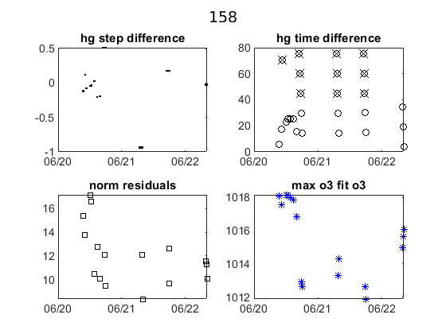
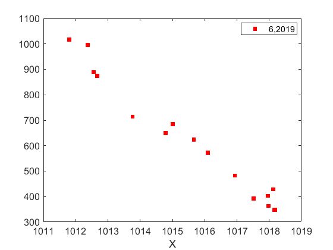

Contents
Brewer Evaluation
clear all;
file_setup='arenos2019_setup';
eval(file_setup);
Cal.n_inst=find(Cal.brw==158);
Cal.file_latex=fullfile('.','latex',Cal.brw_str{Cal.n_inst});
Cal.dir_figs=fullfile('latex',filesep(),Cal.brw_str{Cal.n_inst},...
filesep(),[Cal.brw_str{Cal.n_inst},'_figures'],filesep());
mkdir(Cal.dir_figs);
try
save(Cal.file_save,'-Append','Cal');
catch exception
fprintf('Error: %s\n Initializing data for Brewer %s\n',exception.message,Cal.brw_name{Cal.n_inst});
save(Cal.file_save);
end
ans =
logical
1
ans =
1×1 cell array
{'IZO#185'}
ans =
20×9 cell array
Columns 1 through 5
{'TSK#005'} {[ 5]} {[2]} {[0]} {'005'}
{'IOS#017'} {[ 17]} {[2]} {[0]} {'017'}
{'SCO#033'} {[ 33]} {[2]} {[0]} {'033'}
{'MAD#070'} {[ 70]} {[4]} {[0]} {'070'}
{'UK_#075'} {[ 75]} {[4]} {[0]} {'075'}
{'MUR#117'} {[117]} {[4]} {[0]} {'117'}
{'UK_#126'} {[126]} {[4]} {[0]} {'126'}
{'ARE#150'} {[150]} {[3]} {[0]} {'150'}
{'COR#151'} {[151]} {[4]} {[0]} {'151'}
{'K&Z#158'} {[158]} {[3]} {[0]} {'158'}
{'WRC#163'} {[163]} {[3]} {[0]} {'163'}
{'ZAR#166'} {[166]} {[4]} {[0]} {'166'}
{'UK_#172'} {[172]} {[3]} {[0]} {'172'}
{'JAP#174'} {[174]} {[3]} {[0]} {'174'}
{'IZO#185'} {[185]} {[3]} {[0]} {'185'}
{'MAD#186'} {[186]} {[3]} {[0]} {'186'}
{'CAN#190'} {[190]} {[3]} {[0]} {'190'}
{'TAM#201'} {[201]} {[3]} {[0]} {'201'}
{'DNK#202'} {[202]} {[3]} {[0]} {'202'}
{'DNK#228'} {[228]} {[3]} {[0]} {'228'}
Columns 6 through 9
{'..\005\ICF15117…'} {'..\005\ICF15117…'} {'1838'} {'1838'}
{'..\017\ICF14919…'} {'..\017\ICF14919…'} {'1680'} {'1680'}
{'..\033\ICF15617…'} {'..\033\IOS15617…'} {'2325'} {'2325'}
{'..\070\ICF15617…'} {'..\070\IOS15617…'} {'1685'} {'1685'}
{'..\075\ICF15017…'} {'..\075\ICF15017…'} {'1714'} {'1714'}
{'..\117\ICF15517…'} {'..\117\IOS15517…'} {'1620'} {'1620'}
{'..\126\icf15517…'} {'..\126\ICF17419…'} {'1710'} {'1710'}
{'..\150\ICF15617…'} {'..\150\ICF15617…'} {'0322'} {'0322'}
{'..\151\ICF15317…'} {'..\151\IOS15317…'} {'1880'} {'1880'}
{'..\158\ICF21218…'} {'..\158\ICF21218…'} {'0558'} {'0558'}
{'..\163\ICF23318…'} {'..\163\ICF23318…'} {'0274'} {'0274'}
{'..\166\ICF15217…'} {'..\166\ICF17419…'} {'1955'} {'1955'}
{'..\172\ICF15117…'} {'..\172\ICF15117…'} {'0444'} {'0444'}
{'..\174\ICF20718…'} {'..\174\ICF20718…'} {'0605'} {'0605'}
{'..\185\config18…'} {'..\185\config18…'} {'0365'} {'0367'}
{'..\186\ICF15317…'} {'..\186\IOS15317…'} {'0315'} {'0315'}
{'..\190\ICF11419…'} {'..\190\ICF11419…'} {'0410'} {'0410'}
{'..\201\ICF14315…'} {'..\201\ICF14315…'} {'0320'} {'0320'}
{'..\202\ICF15017…'} {'..\202\ICF15017…'} {'0270'} {'0270'}
{'..\228\ICF15017…'} {'..\228\ICF17319…'} {'0242'} {'0242'}
configuration files
close all
[config_def,TCdef,DTdef,ETCdef,A1def,ATdef]=read_icf(Cal.brw_config_files{Cal.n_inst,2});
[config_orig,TCorig,DTorig,ETCorig,A1orig,ATorig]=read_icf(Cal.brw_config_files{Cal.n_inst,1});
Station.OSC=680;
Station.name='';
Station.lat=67;
Station.long=50;
Station.meanozo=350;
cal_step={}; sc_avg={}; sc_raw={}; Args={};
Sun_scan: Before Campaign
close all
[cal_step{1},sc_avg{1},sc_raw{1},Args{1}]=sc_report(Cal.brw_str{Cal.n_inst},Cal.brw_config_files{Cal.n_inst,1},...
'date_range',datenum(Cal.Date.cal_year,1,[1 159]),...
'CSN_orig',config_orig(14),'OSC',Station.OSC,...
'control_flag',1,'residual_limit',35,...
'hg_time',15,'one_flag',0);
158
warning Date error in file
ans =
-1 12 30 0 0 0
OK->B13019.158
OK->B13119.158
warning Date error in file
ans =
-1 12 30 0 0 0
OK->B13219.158
warning Date error in file
ans =
-1 12 30 0 0 0
OK->B13319.158
warning Date error in file
ans =
-1 12 30 0 0 0
OK->B13419.158
warning Date error in file
ans =
-1 12 30 0 0 0
OK->B13619.158
Sun_scan: Campaign
[cal_step{2},sc_avg{2},sc_raw{2},Args{2}]=sc_report(Cal.brw_str{Cal.n_inst},Cal.brw_config_files{Cal.n_inst,2},...
'date_range',datenum(Cal.Date.cal_year,1,Cal.calibration_days{Cal.n_inst,1}([1 end])),...
'CSN_orig',config_def(14),'OSC',Station.OSC,...
'control_flag',1,'residual_limit',35,...
'hg_time',35,'one_flag',1);
158
OK->B17119.158
OK->B17219.158
OK->B17319.158




ix=sort(findobj('tag','SC_INDIVIDUAL')); figure(ix); set(get(gca,'title'),'FontSize',8);
printfiles_report(ix',Cal.dir_figs,'aux_pattern',ix,'FontSize',.9,'Width',8.5,'Height',7);
ix=sort(findobj('tag','Final_SC_Calculation'));
if length(ix)>1
Width=8; Height=6;
for i=1:length(ix), figure(ix(i)); set(get(gca,'title'),'FontSize',8); end
else
Width=13; Height=8;
end
printfiles_report(ix',Cal.dir_figs,'aux_pattern',ix,'Width',Width,'Height',Height);
close all
naux =
1
naux =
1
figura =
'158_figures_Final_SC_Calculation_1'
naux =
2
Definicion de variables: SC
if length(cal_step)>1
d_p=[length(cal_step)-1 length(cal_step)]; tags={'','new'};
else
d_p=1; tags={'new'};
end
idx=1; cal_step_error={};
for t=d_p
cal_step_error{t}=round(mean([abs(cal_step{t}(2)-cal_step{t}(3)),abs(cal_step{t}(2)-cal_step{t}(4))]));
latexcmd(fullfile(Cal.file_latex,['cal_wavelengthSC',tags{idx},'_',Cal.brw_str{Cal.n_inst}]),...
['\numSC',tags{idx}],size(sc_avg{t},1),...
['\CALCSTEP',tags{idx}],round(cal_step{t}(1)),...
['\calsteperror',tags{idx}],cal_step_error{t});
idx=idx+1;
end
load(Cal.file_save,'sunscan');sunscan{Cal.n_inst}.cal_step=cal_step;
sunscan{Cal.n_inst}.cal_step_error=cal_step_error;
sunscan{Cal.n_inst}.sc_avg=sc_avg; sunscan{Cal.n_inst}.sc_raw=sc_raw;
sunscan{Cal.n_inst}.info=Args;
save(Cal.file_save,'-APPEND','sunscan');
dsp calibration
res={}; detail={}; DSP_QUAD={}; QUAD_SUM={}; QUAD_DETAIL={};
CUBIC_SUM={}; CUBIC_DETAIL={}; salida={}; CSN_icf={};
l=dir(fullfile('DSP',[Cal.brw_str{Cal.n_inst},'*']));
ldsp=cellstr(cat(1,l.name));
ldsp=ldsp(end-3:end)
for jj=1:length(ldsp)
if jj==length(ldsp),confign=2; else confign=1; end
try
[res{jj},detail{jj},DSP_QUAD{jj},QUAD_SUM{jj},QUAD_DETAIL{jj},...
CUBIC_SUM{jj},CUBIC_DETAIL{jj},salida{jj},CSN_icf{jj},...
]=dspreport(Cal,'dsp_dir',fullfile('DSP',ldsp{jj}),'config_n',1);
catch
warning(sprintf('Error en %s. DSP: %s',Cal.brw_name{Cal.n_inst},ldsp{jj}));
res{jj}=NaN*ones(15,9,2); detail{jj}=NaN*ones(7,6,15,2); QUAD_DETAIL{jj}=NaN;
end
datefile =
736985
now:W1029017.158
now:W3029017.158
now:W7029017.158
now:W8029017.158
now:W9029017.158
now:W11029017.158
now:W12029017.158
now:W1129017.158
now:W3129017.158
now:W7129017.158
now:W8129017.158
now:W9129017.158
now:W11129017.158
now:W12129017.158
now:W13129017.158
now:W3229017.158
now:W7229017.158
now:W8229017.158
now:W9229017.158
now:W11229017.158
now:W12229017.158
now:W13229017.158
now:W3329017.158
now:W7329017.158
now:W8329017.158
now:W9329017.158
now:W11329017.158
now:W12329017.158
now:W13329017.158
now:W7429017.158
now:W8429017.158
now:W9429017.158
now:W11429017.158
now:W12429017.158
now:W13429017.158
now:W7529017.158
now:W8529017.158
now:W9529017.158
now:W11529017.158
now:W12529017.158
now:W13529017.158
now:W14529017.158
lines_dsp_28917__158
saving alldsp to DSP/158_17_290/alldsp_28917_158.158
eliminamos la linea slit 2 3499.952000 -0.269891
eliminamos la linea slit 4 3499.952000 -0.171743
eliminamos la linea slit 3 3499.952000 -0.177327
eliminamos la linea slit 2 3403.652000 -0.150057
eliminamos la linea slit 1 3403.652000 -0.149011
saving normaldsp to DSP/158_17_290/dspnorm_28917_158.158 as brewer compatible file
Use polyval(pwl(2,:),wl) for calculating normal wavelengths
Saving ozonecoeffs to DSP/158_17_290/opos28917_158.158
1010 WL(A) 3031.54 3062.65 3100.05 3134.62 3167.52 3199.55
Res(A) 10.95 11.01 10.78 10.95 10.84 10.61
O3abs(1/cm) 2.6114 1.7878 1.0067 0.6783 0.3747 0.2970 O3: 0.3481
Daumt O3abs(1/cm) 2.6183 1.7821 0.9986 0.6717 0.3679 0.2969 O3: 0.3580
So2abs(1/cm) 3.5100 5.5322 2.3604 1.9652 1.0463 0.6258
Bremen O3abs(1/cm) 2.6216 1.7854 1.0042 0.6813 0.3731 0.2981 O3: 0.3496
Nicolet 1e4*Rayabs(1/cm) 5053.3 4834.7 4587.6 4373.4 4181.3 4004.5 R: 9.6159
Bates(fix) 1e4*Rayabs(1/cm) 0.0 4870.0 4620.0 4410.0 4220.0 4040.0 R: -1.0000
Bodhaine 1e4*Rayabs(1/cm) 5049.8 4832.7 4587.1 4374.1 4182.9 4006.8 R: 9.2459
I0(mW m^-2nm^-1) 11714.19 9410.85 7354.70 4916.53 4076.46 3240.83 ETC: 1438
Ozone offset due to Rayleigh (RayCOeff/O3Coeff): -2.8 DU
Ozone offset due to Rayleigh (Bodhaine): -2.9 DU
Ratio Ozone for So2(A3)= 1.1643, So2/O3(A2)= 2.6970
O3 factor from Bass & Paur to Daumont = 0.9722
O3 factor from Bass & Paur to Bremen = 0.9956
1011 WL(A) 3031.62 3062.72 3100.13 3134.69 3167.59 3199.62
Res(A) 10.95 11.01 10.78 10.95 10.84 10.61
O3abs(1/cm) 2.6087 1.7863 1.0065 0.6781 0.3747 0.2966 O3: 0.3473
Daumt O3abs(1/cm) 2.6156 1.7807 0.9982 0.6717 0.3679 0.2966 O3: 0.3573
So2abs(1/cm) 3.4912 5.5577 2.3673 1.9534 1.0476 0.6237
Bremen O3abs(1/cm) 2.6190 1.7839 1.0038 0.6812 0.3730 0.2978 O3: 0.3488
Nicolet 1e4*Rayabs(1/cm) 5052.7 4834.2 4587.1 4373.0 4180.9 4004.1 R: 9.6130
Bates(fix) 1e4*Rayabs(1/cm) 0.0 4870.0 4620.0 4410.0 4220.0 4040.0 R: -1.0000
Bodhaine 1e4*Rayabs(1/cm) 5049.3 4832.2 4586.6 4373.7 4182.5 4006.4 R: 9.2401
I0(mW m^-2nm^-1) 11707.61 9404.41 7329.09 4912.44 4066.18 3235.57 ETC: 1428
Ozone offset due to Rayleigh (RayCOeff/O3Coeff): -2.8 DU
Ozone offset due to Rayleigh (Bodhaine): -2.9 DU
Ratio Ozone for So2(A3)= 1.1617, So2/O3(A2)= 2.7147
O3 factor from Bass & Paur to Daumont = 0.9719
O3 factor from Bass & Paur to Bremen = 0.9955
1012 WL(A) 3031.69 3062.79 3100.20 3134.76 3167.66 3199.69
Res(A) 10.95 11.01 10.78 10.95 10.84 10.61
O3abs(1/cm) 2.6061 1.7848 1.0062 0.6779 0.3747 0.2962 O3: 0.3464
Daumt O3abs(1/cm) 2.6129 1.7794 0.9979 0.6716 0.3679 0.2964 O3: 0.3566
So2abs(1/cm) 3.4731 5.5832 2.3741 1.9416 1.0489 0.6217
Bremen O3abs(1/cm) 2.6164 1.7825 1.0035 0.6811 0.3730 0.2975 O3: 0.3480
Nicolet 1e4*Rayabs(1/cm) 5052.2 4833.7 4586.7 4372.6 4180.5 4003.7 R: 9.6101
Bates(fix) 1e4*Rayabs(1/cm) 0.0 4870.0 4620.0 4410.0 4220.0 4040.0 R: -1.0000
Bodhaine 1e4*Rayabs(1/cm) 5048.7 4831.7 4586.2 4373.2 4182.1 4006.0 R: 9.2396
I0(mW m^-2nm^-1) 11701.04 9397.99 7303.64 4908.35 4055.93 3230.17 ETC: 1418
Ozone offset due to Rayleigh (RayCOeff/O3Coeff): -2.8 DU
Ozone offset due to Rayleigh (Bodhaine): -3.0 DU
Ratio Ozone for So2(A3)= 1.1590, So2/O3(A2)= 2.7326
O3 factor from Bass & Paur to Daumont = 0.9716
O3 factor from Bass & Paur to Bremen = 0.9954
1013 WL(A) 3031.77 3062.87 3100.27 3134.83 3167.73 3199.76
Res(A) 10.95 11.01 10.78 10.95 10.84 10.61
O3abs(1/cm) 2.6034 1.7833 1.0058 0.6776 0.3747 0.2958 O3: 0.3454
Daumt O3abs(1/cm) 2.6103 1.7780 0.9975 0.6715 0.3679 0.2960 O3: 0.3558
So2abs(1/cm) 3.4555 5.6069 2.3815 1.9300 1.0502 0.6195
Bremen O3abs(1/cm) 2.6138 1.7810 1.0031 0.6809 0.3730 0.2972 O3: 0.3472
Nicolet 1e4*Rayabs(1/cm) 5051.7 4833.2 4586.2 4372.1 4180.1 4003.3 R: 9.6072
Bates(fix) 1e4*Rayabs(1/cm) 0.0 4870.0 4620.0 4410.0 4220.0 4040.0 R: -1.0000
Bodhaine 1e4*Rayabs(1/cm) 5048.2 4831.2 4585.7 4372.8 4181.7 4005.6 R: 9.2373
I0(mW m^-2nm^-1) 11694.48 9391.57 7278.33 4904.27 4045.70 3220.28 ETC: 1400
Ozone offset due to Rayleigh (RayCOeff/O3Coeff): -2.8 DU
Ozone offset due to Rayleigh (Bodhaine): -3.0 DU
Ratio Ozone for So2(A3)= 1.1559, So2/O3(A2)= 2.7498
O3 factor from Bass & Paur to Daumont = 0.9710
O3 factor from Bass & Paur to Bremen = 0.9949
1014 WL(A) 3031.84 3062.94 3100.34 3134.90 3167.80 3199.83
Res(A) 10.95 11.01 10.78 10.95 10.84 10.61
O3abs(1/cm) 2.6007 1.7818 1.0055 0.6774 0.3748 0.2953 O3: 0.3444
Daumt O3abs(1/cm) 2.6076 1.7766 0.9972 0.6713 0.3679 0.2957 O3: 0.3549
So2abs(1/cm) 3.4380 5.6294 2.3891 1.9184 1.0514 0.6174
Bremen O3abs(1/cm) 2.6113 1.7795 1.0028 0.6807 0.3731 0.2969 O3: 0.3463
Nicolet 1e4*Rayabs(1/cm) 5051.2 4832.7 4585.7 4371.7 4179.7 4003.0 R: 9.6044
Bates(fix) 1e4*Rayabs(1/cm) 0.0 4870.0 4620.0 4410.0 4220.0 4040.0 R: -1.0000
Bodhaine 1e4*Rayabs(1/cm) 5047.7 4830.7 4585.2 4372.4 4181.3 4005.3 R: 9.2326
I0(mW m^-2nm^-1) 11687.93 9385.17 7253.16 4900.19 4035.50 3210.07 ETC: 1382
Ozone offset due to Rayleigh (RayCOeff/O3Coeff): -2.8 DU
Ozone offset due to Rayleigh (Bodhaine): -3.0 DU
Ratio Ozone for So2(A3)= 1.1528, So2/O3(A2)= 2.7663
O3 factor from Bass & Paur to Daumont = 0.9703
O3 factor from Bass & Paur to Bremen = 0.9944
1015 WL(A) 3031.91 3063.01 3100.42 3134.97 3167.87 3199.90
Res(A) 10.95 11.01 10.78 10.95 10.84 10.61
O3abs(1/cm) 2.5981 1.7802 1.0052 0.6771 0.3748 0.2948 O3: 0.3434
Daumt O3abs(1/cm) 2.6050 1.7751 0.9969 0.6712 0.3679 0.2954 O3: 0.3540
So2abs(1/cm) 3.4215 5.6516 2.3967 1.9066 1.0527 0.6152
Bremen O3abs(1/cm) 2.6088 1.7780 1.0025 0.6805 0.3731 0.2965 O3: 0.3454
Nicolet 1e4*Rayabs(1/cm) 5050.6 4832.2 4585.3 4371.3 4179.3 4002.6 R: 9.6015
Bates(fix) 1e4*Rayabs(1/cm) 0.0 4870.0 4620.0 4410.0 4220.0 4040.0 R: -1.0000
Bodhaine 1e4*Rayabs(1/cm) 5047.2 4830.2 4584.8 4371.9 4180.9 4004.9 R: 9.2313
I0(mW m^-2nm^-1) 11681.39 9378.77 7231.66 4896.11 4025.31 3199.88 ETC: 1368
Ozone offset due to Rayleigh (RayCOeff/O3Coeff): -2.8 DU
Ozone offset due to Rayleigh (Bodhaine): -3.0 DU
Ratio Ozone for So2(A3)= 1.1495, So2/O3(A2)= 2.7828
O3 factor from Bass & Paur to Daumont = 0.9698
O3 factor from Bass & Paur to Bremen = 0.9940
1016 WL(A) 3031.99 3063.08 3100.49 3135.04 3167.94 3199.97
Res(A) 10.95 11.01 10.78 10.95 10.84 10.61
O3abs(1/cm) 2.5954 1.7786 1.0050 0.6767 0.3748 0.2943 O3: 0.3424
Daumt O3abs(1/cm) 2.6024 1.7737 0.9965 0.6710 0.3679 0.2950 O3: 0.3531
So2abs(1/cm) 3.4059 5.6738 2.4044 1.8945 1.0540 0.6129
Bremen O3abs(1/cm) 2.6063 1.7764 1.0021 0.6803 0.3731 0.2961 O3: 0.3445
Nicolet 1e4*Rayabs(1/cm) 5050.1 4831.7 4584.8 4370.9 4178.9 4002.2 R: 9.5986
Bates(fix) 1e4*Rayabs(1/cm) 0.0 4870.0 4620.0 4410.0 4220.0 4040.0 R: -1.0000
Bodhaine 1e4*Rayabs(1/cm) 5046.6 4829.7 4584.3 4371.5 4180.5 4004.5 R: 9.2281
I0(mW m^-2nm^-1) 11674.86 9372.38 7216.33 4892.03 4015.15 3189.72 ETC: 1359
Ozone offset due to Rayleigh (RayCOeff/O3Coeff): -2.8 DU
Ozone offset due to Rayleigh (Bodhaine): -3.0 DU
Ratio Ozone for So2(A3)= 1.1462, So2/O3(A2)= 2.7993
O3 factor from Bass & Paur to Daumont = 0.9696
O3 factor from Bass & Paur to Bremen = 0.9939
1017 WL(A) 3032.06 3063.16 3100.56 3135.12 3168.01 3200.04
Res(A) 10.95 11.01 10.78 10.95 10.84 10.61
O3abs(1/cm) 2.5930 1.7770 1.0047 0.6763 0.3749 0.2938 O3: 0.3413
Daumt O3abs(1/cm) 2.5999 1.7722 0.9962 0.6708 0.3680 0.2946 O3: 0.3521
So2abs(1/cm) 3.3908 5.6944 2.4125 1.8827 1.0552 0.6107
Bremen O3abs(1/cm) 2.6038 1.7749 1.0018 0.6801 0.3732 0.2957 O3: 0.3435
Nicolet 1e4*Rayabs(1/cm) 5049.6 4831.2 4584.4 4370.4 4178.5 4001.9 R: 9.5957
Bates(fix) 1e4*Rayabs(1/cm) 0.0 4870.0 4620.0 4410.0 4220.0 4040.0 R: -1.0000
Bodhaine 1e4*Rayabs(1/cm) 5046.1 4829.2 4583.9 4371.1 4180.1 4004.1 R: 9.2250
I0(mW m^-2nm^-1) 11668.34 9366.00 7201.43 4887.96 4005.02 3179.58 ETC: 1352
Ozone offset due to Rayleigh (RayCOeff/O3Coeff): -2.8 DU
Ozone offset due to Rayleigh (Bodhaine): -3.0 DU
Ratio Ozone for So2(A3)= 1.1427, So2/O3(A2)= 2.8149
O3 factor from Bass & Paur to Daumont = 0.9693
O3 factor from Bass & Paur to Bremen = 0.9938
1018 WL(A) 3032.13 3063.23 3100.63 3135.19 3168.08 3200.11
Res(A) 10.95 11.01 10.77 10.95 10.84 10.61
O3abs(1/cm) 2.5905 1.7754 1.0045 0.6759 0.3750 0.2934 O3: 0.3403
Daumt O3abs(1/cm) 2.5974 1.7707 0.9959 0.6706 0.3680 0.2942 O3: 0.3511
So2abs(1/cm) 3.3760 5.7136 2.4208 1.8711 1.0564 0.6084
Bremen O3abs(1/cm) 2.6014 1.7733 1.0014 0.6798 0.3733 0.2953 O3: 0.3424
Nicolet 1e4*Rayabs(1/cm) 5049.0 4830.7 4583.9 4370.0 4178.1 4001.5 R: 9.5929
Bates(fix) 1e4*Rayabs(1/cm) 0.0 4870.0 4620.0 4410.0 4220.0 4040.0 R: -1.0000
Bodhaine 1e4*Rayabs(1/cm) 5045.6 4828.8 4583.4 4370.7 4179.7 4003.8 R: 9.2200
I0(mW m^-2nm^-1) 11661.82 9359.63 7186.97 4883.90 3994.91 3169.46 ETC: 1344
Ozone offset due to Rayleigh (RayCOeff/O3Coeff): -2.8 DU
Ozone offset due to Rayleigh (Bodhaine): -3.0 DU
Ratio Ozone for So2(A3)= 1.1392, So2/O3(A2)= 2.8295
O3 factor from Bass & Paur to Daumont = 0.9692
O3 factor from Bass & Paur to Bremen = 0.9938
1019 WL(A) 3032.21 3063.30 3100.70 3135.26 3168.15 3200.17
Res(A) 10.95 11.01 10.77 10.95 10.84 10.61
O3abs(1/cm) 2.5881 1.7737 1.0042 0.6754 0.3751 0.2929 O3: 0.3392
Daumt O3abs(1/cm) 2.5949 1.7692 0.9955 0.6703 0.3681 0.2938 O3: 0.3501
So2abs(1/cm) 3.3619 5.7322 2.4293 1.8592 1.0577 0.6061
Bremen O3abs(1/cm) 2.5990 1.7717 1.0011 0.6795 0.3733 0.2949 O3: 0.3413
Nicolet 1e4*Rayabs(1/cm) 5048.5 4830.2 4583.4 4369.6 4177.7 4001.1 R: 9.5900
Bates(fix) 1e4*Rayabs(1/cm) 0.0 4870.0 4620.0 4410.0 4220.0 4040.0 R: -1.0000
Bodhaine 1e4*Rayabs(1/cm) 5045.0 4828.3 4583.0 4370.2 4179.3 4003.4 R: 9.2209
I0(mW m^-2nm^-1) 11655.32 9353.27 7172.76 4879.83 3984.82 3159.36 ETC: 1337
Ozone offset due to Rayleigh (RayCOeff/O3Coeff): -2.8 DU
Ozone offset due to Rayleigh (Bodhaine): -3.0 DU
Ratio Ozone for So2(A3)= 1.1357, So2/O3(A2)= 2.8436
O3 factor from Bass & Paur to Daumont = 0.9690
O3 factor from Bass & Paur to Bremen = 0.9938
1020 WL(A) 3032.28 3063.38 3100.78 3135.33 3168.22 3200.24
Res(A) 10.95 11.01 10.77 10.95 10.84 10.61
O3abs(1/cm) 2.5856 1.7720 1.0038 0.6750 0.3751 0.2923 O3: 0.3380
Daumt O3abs(1/cm) 2.5924 1.7677 0.9952 0.6700 0.3682 0.2934 O3: 0.3490
So2abs(1/cm) 3.3489 5.7508 2.4378 1.8471 1.0589 0.6037
Bremen O3abs(1/cm) 2.5966 1.7700 1.0008 0.6792 0.3734 0.2944 O3: 0.3402
Nicolet 1e4*Rayabs(1/cm) 5048.0 4829.7 4583.0 4369.1 4177.3 4000.7 R: 9.5871
Bates(fix) 1e4*Rayabs(1/cm) 0.0 4870.0 4620.0 4410.0 4220.0 4040.0 R: -1.0000
Bodhaine 1e4*Rayabs(1/cm) 5044.5 4827.8 4582.5 4369.8 4178.9 4003.0 R: 9.2179
I0(mW m^-2nm^-1) 11648.83 9346.92 7155.69 4875.77 3974.75 3149.29 ETC: 1327
Ozone offset due to Rayleigh (RayCOeff/O3Coeff): -2.8 DU
Ozone offset due to Rayleigh (Bodhaine): -3.0 DU
Ratio Ozone for So2(A3)= 1.1318, So2/O3(A2)= 2.8585
O3 factor from Bass & Paur to Daumont = 0.9685
O3 factor from Bass & Paur to Bremen = 0.9934
saving powfiu7 to DSP/158_17_290/dsp_28917_158.158
freecoef =
4
freecoef =
9
freecoef =
9
freecoef =
9
freecoef =
9
freecoef =
9
freecoef =
9
freecoef =
9
freecoef =
9
freecoef =
9
saving data to file:DSP/158_17_290/dsp_28917_158.158
Use brstps2 to calculate steps and wavelengths
Saving ozonecoeffs to DSP/158_17_290/opos_pow7_28917_158.158
1010 WL(A) 3031.63 3062.71 3100.15 3134.69 3167.62 3199.68
Res(A) 10.94 11.00 10.77 10.94 10.85 10.62
O3abs(1/cm) 2.6082 1.7866 1.0064 0.6782 0.3747 0.2963 O3: 0.3466
Daumt O3abs(1/cm) 2.6151 1.7810 0.9981 0.6717 0.3679 0.2964 O3: 0.3567
So2abs(1/cm) 3.4871 5.5546 2.3697 1.9529 1.0482 0.6219
Bremen O3abs(1/cm) 2.6185 1.7842 1.0037 0.6812 0.3731 0.2976 O3: 0.3482
Nicolet 1e4*Rayabs(1/cm) 5052.6 4834.3 4586.9 4373.0 4180.7 4003.8 R: 9.3273
Bates(fix) 1e4*Rayabs(1/cm) 0.0 4870.0 4620.0 4410.0 4220.0 4040.0 R: -1.0000
Bodhaine 1e4*Rayabs(1/cm) 5049.2 4832.3 4586.5 4373.6 4182.3 4006.0 R: 8.9607
I0(mW m^-2nm^-1) 11706.39 9405.38 7320.01 4912.19 4061.09 3230.84 ETC: 1422
Ozone offset due to Rayleigh (RayCOeff/O3Coeff): -2.7 DU
Ozone offset due to Rayleigh (Bodhaine): -2.9 DU
Ratio Ozone for So2(A3)= 1.1609, So2/O3(A2)= 2.7066
O3 factor from Bass & Paur to Daumont = 0.9715
O3 factor from Bass & Paur to Bremen = 0.9953
1011 WL(A) 3031.71 3062.78 3100.23 3134.76 3167.69 3199.75
Res(A) 10.94 11.00 10.77 10.94 10.85 10.62
O3abs(1/cm) 2.6055 1.7851 1.0060 0.6779 0.3747 0.2958 O3: 0.3456
Daumt O3abs(1/cm) 2.6124 1.7796 0.9977 0.6716 0.3679 0.2961 O3: 0.3559
So2abs(1/cm) 3.4692 5.5801 2.3766 1.9411 1.0495 0.6197
Bremen O3abs(1/cm) 2.6159 1.7827 1.0033 0.6811 0.3731 0.2972 O3: 0.3474
Nicolet 1e4*Rayabs(1/cm) 5052.1 4833.8 4586.5 4372.5 4180.3 4003.4 R: 9.3249
Bates(fix) 1e4*Rayabs(1/cm) 0.0 4870.0 4620.0 4410.0 4220.0 4040.0 R: -1.0000
Bodhaine 1e4*Rayabs(1/cm) 5048.6 4831.8 4586.0 4373.2 4181.9 4005.7 R: 8.9552
I0(mW m^-2nm^-1) 11699.81 9398.95 7294.59 4908.09 4050.86 3221.41 ETC: 1405
Ozone offset due to Rayleigh (RayCOeff/O3Coeff): -2.7 DU
Ozone offset due to Rayleigh (Bodhaine): -2.9 DU
Ratio Ozone for So2(A3)= 1.1579, So2/O3(A2)= 2.7251
O3 factor from Bass & Paur to Daumont = 0.9709
O3 factor from Bass & Paur to Bremen = 0.9948
1012 WL(A) 3031.78 3062.85 3100.30 3134.83 3167.76 3199.82
Res(A) 10.94 11.00 10.77 10.94 10.85 10.62
O3abs(1/cm) 2.6028 1.7836 1.0057 0.6777 0.3748 0.2953 O3: 0.3445
Daumt O3abs(1/cm) 2.6097 1.7782 0.9974 0.6715 0.3679 0.2957 O3: 0.3551
So2abs(1/cm) 3.4516 5.6040 2.3841 1.9295 1.0508 0.6176
Bremen O3abs(1/cm) 2.6133 1.7813 1.0030 0.6810 0.3731 0.2969 O3: 0.3465
Nicolet 1e4*Rayabs(1/cm) 5051.6 4833.3 4586.0 4372.1 4179.9 4003.0 R: 9.3226
Bates(fix) 1e4*Rayabs(1/cm) 0.0 4870.0 4620.0 4410.0 4220.0 4040.0 R: -1.0000
Bodhaine 1e4*Rayabs(1/cm) 5048.1 4831.3 4585.5 4372.8 4181.5 4005.3 R: 8.9495
I0(mW m^-2nm^-1) 11693.25 9392.53 7269.31 4904.00 4040.65 3211.20 ETC: 1387
Ozone offset due to Rayleigh (RayCOeff/O3Coeff): -2.7 DU
Ozone offset due to Rayleigh (Bodhaine): -2.9 DU
Ratio Ozone for So2(A3)= 1.1547, So2/O3(A2)= 2.7426
O3 factor from Bass & Paur to Daumont = 0.9702
O3 factor from Bass & Paur to Bremen = 0.9943
1013 WL(A) 3031.85 3062.93 3100.37 3134.90 3167.83 3199.89
Res(A) 10.94 11.00 10.77 10.94 10.85 10.62
O3abs(1/cm) 2.6002 1.7821 1.0054 0.6774 0.3748 0.2949 O3: 0.3435
Daumt O3abs(1/cm) 2.6071 1.7768 0.9971 0.6714 0.3679 0.2954 O3: 0.3542
So2abs(1/cm) 3.4340 5.6268 2.3918 1.9179 1.0521 0.6155
Bremen O3abs(1/cm) 2.6108 1.7798 1.0027 0.6808 0.3731 0.2965 O3: 0.3456
Nicolet 1e4*Rayabs(1/cm) 5051.0 4832.8 4585.6 4371.7 4179.5 4002.6 R: 9.3203
Bates(fix) 1e4*Rayabs(1/cm) 0.0 4870.0 4620.0 4410.0 4220.0 4040.0 R: -1.0000
Bodhaine 1e4*Rayabs(1/cm) 5047.6 4830.8 4585.1 4372.4 4181.1 4004.9 R: 8.9527
I0(mW m^-2nm^-1) 11686.70 9386.12 7244.17 4899.91 4030.46 3201.01 ETC: 1369
Ozone offset due to Rayleigh (RayCOeff/O3Coeff): -2.7 DU
Ozone offset due to Rayleigh (Bodhaine): -2.9 DU
Ratio Ozone for So2(A3)= 1.1515, So2/O3(A2)= 2.7594
O3 factor from Bass & Paur to Daumont = 0.9696
O3 factor from Bass & Paur to Bremen = 0.9938
1014 WL(A) 3031.93 3063.00 3100.44 3134.98 3167.90 3199.96
Res(A) 10.94 11.00 10.77 10.94 10.85 10.62
O3abs(1/cm) 2.5975 1.7806 1.0052 0.6771 0.3748 0.2944 O3: 0.3425
Daumt O3abs(1/cm) 2.6045 1.7754 0.9967 0.6712 0.3679 0.2950 O3: 0.3533
So2abs(1/cm) 3.4180 5.6490 2.3994 1.9061 1.0533 0.6132
Bremen O3abs(1/cm) 2.6083 1.7782 1.0023 0.6806 0.3731 0.2962 O3: 0.3446
Nicolet 1e4*Rayabs(1/cm) 5050.5 4832.3 4585.1 4371.3 4179.1 4002.3 R: 9.3179
Bates(fix) 1e4*Rayabs(1/cm) 0.0 4870.0 4620.0 4410.0 4220.0 4040.0 R: -1.0000
Bodhaine 1e4*Rayabs(1/cm) 5047.1 4830.3 4584.6 4371.9 4180.7 4004.6 R: 8.9496
I0(mW m^-2nm^-1) 11680.15 9379.71 7226.49 4895.82 4020.30 3190.85 ETC: 1358
Ozone offset due to Rayleigh (RayCOeff/O3Coeff): -2.7 DU
Ozone offset due to Rayleigh (Bodhaine): -2.9 DU
Ratio Ozone for So2(A3)= 1.1484, So2/O3(A2)= 2.7754
O3 factor from Bass & Paur to Daumont = 0.9693
O3 factor from Bass & Paur to Bremen = 0.9937
1015 WL(A) 3032.00 3063.07 3100.51 3135.05 3167.97 3200.03
Res(A) 10.94 11.00 10.77 10.94 10.85 10.62
O3abs(1/cm) 2.5949 1.7789 1.0049 0.6767 0.3749 0.2939 O3: 0.3414
Daumt O3abs(1/cm) 2.6019 1.7740 0.9964 0.6710 0.3679 0.2947 O3: 0.3523
So2abs(1/cm) 3.4025 5.6712 2.4071 1.8940 1.0546 0.6109
Bremen O3abs(1/cm) 2.6058 1.7767 1.0020 0.6803 0.3732 0.2958 O3: 0.3436
Nicolet 1e4*Rayabs(1/cm) 5050.0 4831.8 4584.6 4370.8 4178.7 4001.9 R: 9.3156
Bates(fix) 1e4*Rayabs(1/cm) 0.0 4870.0 4620.0 4410.0 4220.0 4040.0 R: -1.0000
Bodhaine 1e4*Rayabs(1/cm) 5046.5 4829.8 4584.2 4371.5 4180.3 4004.2 R: 8.9438
I0(mW m^-2nm^-1) 11673.62 9373.32 7211.31 4891.74 4010.15 3180.71 ETC: 1350
Ozone offset due to Rayleigh (RayCOeff/O3Coeff): -2.7 DU
Ozone offset due to Rayleigh (Bodhaine): -2.9 DU
Ratio Ozone for So2(A3)= 1.1449, So2/O3(A2)= 2.7922
O3 factor from Bass & Paur to Daumont = 0.9691
O3 factor from Bass & Paur to Bremen = 0.9936
1016 WL(A) 3032.08 3063.15 3100.59 3135.12 3168.04 3200.10
Res(A) 10.94 11.00 10.77 10.94 10.85 10.62
O3abs(1/cm) 2.5925 1.7773 1.0047 0.6763 0.3749 0.2934 O3: 0.3404
Daumt O3abs(1/cm) 2.5994 1.7725 0.9961 0.6708 0.3680 0.2943 O3: 0.3513
So2abs(1/cm) 3.3874 5.6920 2.4154 1.8823 1.0558 0.6087
Bremen O3abs(1/cm) 2.6033 1.7751 1.0017 0.6801 0.3732 0.2954 O3: 0.3426
Nicolet 1e4*Rayabs(1/cm) 5049.4 4831.3 4584.2 4370.4 4178.3 4001.5 R: 9.3133
Bates(fix) 1e4*Rayabs(1/cm) 0.0 4870.0 4620.0 4410.0 4220.0 4040.0 R: -1.0000
Bodhaine 1e4*Rayabs(1/cm) 5046.0 4829.3 4583.7 4371.1 4179.9 4003.8 R: 8.9430
I0(mW m^-2nm^-1) 11667.10 9366.93 7196.56 4887.66 4000.04 3170.59 ETC: 1343
Ozone offset due to Rayleigh (RayCOeff/O3Coeff): -2.7 DU
Ozone offset due to Rayleigh (Bodhaine): -2.9 DU
Ratio Ozone for So2(A3)= 1.1414, So2/O3(A2)= 2.8081
O3 factor from Bass & Paur to Daumont = 0.9689
O3 factor from Bass & Paur to Bremen = 0.9936
1017 WL(A) 3032.15 3063.22 3100.66 3135.19 3168.11 3200.17
Res(A) 10.94 11.00 10.77 10.94 10.85 10.62
O3abs(1/cm) 2.5900 1.7757 1.0044 0.6759 0.3750 0.2929 O3: 0.3393
Daumt O3abs(1/cm) 2.5969 1.7710 0.9957 0.6706 0.3681 0.2939 O3: 0.3503
So2abs(1/cm) 3.3725 5.7115 2.4238 1.8706 1.0570 0.6063
Bremen O3abs(1/cm) 2.6009 1.7736 1.0013 0.6798 0.3733 0.2949 O3: 0.3415
Nicolet 1e4*Rayabs(1/cm) 5048.9 4830.8 4583.7 4370.0 4177.9 4001.1 R: 9.3109
Bates(fix) 1e4*Rayabs(1/cm) 0.0 4870.0 4620.0 4410.0 4220.0 4040.0 R: -1.0000
Bodhaine 1e4*Rayabs(1/cm) 5045.5 4828.8 4583.3 4370.6 4179.5 4003.4 R: 8.9436
I0(mW m^-2nm^-1) 11660.58 9360.55 7182.23 4883.58 3989.94 3160.50 ETC: 1335
Ozone offset due to Rayleigh (RayCOeff/O3Coeff): -2.7 DU
Ozone offset due to Rayleigh (Bodhaine): -2.9 DU
Ratio Ozone for So2(A3)= 1.1380, So2/O3(A2)= 2.8228
O3 factor from Bass & Paur to Daumont = 0.9688
O3 factor from Bass & Paur to Bremen = 0.9936
1018 WL(A) 3032.22 3063.29 3100.73 3135.26 3168.18 3200.24
Res(A) 10.94 11.00 10.77 10.94 10.85 10.61
O3abs(1/cm) 2.5876 1.7740 1.0040 0.6755 0.3751 0.2924 O3: 0.3381
Daumt O3abs(1/cm) 2.5944 1.7695 0.9954 0.6704 0.3681 0.2934 O3: 0.3492
So2abs(1/cm) 3.3590 5.7302 2.4323 1.8588 1.0583 0.6039
Bremen O3abs(1/cm) 2.5985 1.7720 1.0010 0.6795 0.3734 0.2945 O3: 0.3404
Nicolet 1e4*Rayabs(1/cm) 5048.4 4830.3 4583.3 4369.5 4177.5 4000.8 R: 9.3086
Bates(fix) 1e4*Rayabs(1/cm) 0.0 4870.0 4620.0 4410.0 4220.0 4040.0 R: -1.0000
Bodhaine 1e4*Rayabs(1/cm) 5044.9 4828.3 4582.8 4370.2 4179.1 4003.1 R: 8.9381
I0(mW m^-2nm^-1) 11654.08 9354.19 7166.94 4879.51 3979.87 3150.42 ETC: 1327
Ozone offset due to Rayleigh (RayCOeff/O3Coeff): -2.8 DU
Ozone offset due to Rayleigh (Bodhaine): -2.9 DU
Ratio Ozone for So2(A3)= 1.1342, So2/O3(A2)= 2.8374
O3 factor from Bass & Paur to Daumont = 0.9684
O3 factor from Bass & Paur to Bremen = 0.9933
1019 WL(A) 3032.30 3063.37 3100.80 3135.33 3168.25 3200.31
Res(A) 10.94 11.00 10.77 10.94 10.85 10.61
O3abs(1/cm) 2.5851 1.7723 1.0037 0.6750 0.3752 0.2917 O3: 0.3368
Daumt O3abs(1/cm) 2.5919 1.7680 0.9951 0.6701 0.3682 0.2930 O3: 0.3480
So2abs(1/cm) 3.3460 5.7488 2.4407 1.8466 1.0595 0.6015
Bremen O3abs(1/cm) 2.5961 1.7703 1.0007 0.6792 0.3735 0.2940 O3: 0.3392
Nicolet 1e4*Rayabs(1/cm) 5047.9 4829.8 4582.8 4369.1 4177.1 4000.4 R: 9.3063
Bates(fix) 1e4*Rayabs(1/cm) 0.0 4870.0 4620.0 4410.0 4220.0 4040.0 R: -1.0000
Bodhaine 1e4*Rayabs(1/cm) 5044.4 4827.8 4582.3 4369.8 4178.7 4002.7 R: 8.9349
I0(mW m^-2nm^-1) 11647.58 9347.83 7149.89 4875.44 3969.82 3140.37 ETC: 1317
Ozone offset due to Rayleigh (RayCOeff/O3Coeff): -2.8 DU
Ozone offset due to Rayleigh (Bodhaine): -3.0 DU
Ratio Ozone for So2(A3)= 1.1301, So2/O3(A2)= 2.8526
O3 factor from Bass & Paur to Daumont = 0.9677
O3 factor from Bass & Paur to Bremen = 0.9928
1020 WL(A) 3032.37 3063.44 3100.87 3135.40 3168.33 3200.38
Res(A) 10.94 11.00 10.77 10.94 10.85 10.61
O3abs(1/cm) 2.5826 1.7707 1.0034 0.6745 0.3753 0.2911 O3: 0.3355
Daumt O3abs(1/cm) 2.5895 1.7664 0.9947 0.6698 0.3683 0.2925 O3: 0.3468
So2abs(1/cm) 3.3335 5.7663 2.4497 1.8348 1.0606 0.5991
Bremen O3abs(1/cm) 2.5937 1.7687 1.0003 0.6788 0.3736 0.2935 O3: 0.3380
Nicolet 1e4*Rayabs(1/cm) 5047.3 4829.3 4582.3 4368.7 4176.7 4000.0 R: 9.3039
Bates(fix) 1e4*Rayabs(1/cm) 0.0 4870.0 4620.0 4410.0 4220.0 4040.0 R: -1.0000
Bodhaine 1e4*Rayabs(1/cm) 5043.9 4827.3 4581.9 4369.4 4178.3 4002.3 R: 8.9371
I0(mW m^-2nm^-1) 11641.09 9341.48 7132.90 4871.38 3959.79 3136.84 ETC: 1318
Ozone offset due to Rayleigh (RayCOeff/O3Coeff): -2.8 DU
Ozone offset due to Rayleigh (Bodhaine): -3.0 DU
Ratio Ozone for So2(A3)= 1.1262, So2/O3(A2)= 2.8669
O3 factor from Bass & Paur to Daumont = 0.9672
O3 factor from Bass & Paur to Bremen = 0.9924
datefile =
736986
now:W1029017.158
now:W3029017.158
now:W7029017.158
now:W8029017.158
now:W9029017.158
now:W11029017.158
now:W12029017.158
now:W1129017.158
now:W3129017.158
now:W7129017.158
now:W8129017.158
now:W9129017.158
now:W11129017.158
now:W12129017.158
now:W13129017.158
now:W3229017.158
now:W7229017.158
now:W8229017.158
now:W9229017.158
now:W11229017.158
now:W12229017.158
now:W13229017.158
now:W3329017.158
now:W7329017.158
now:W8329017.158
now:W9329017.158
now:W11329017.158
now:W12329017.158
now:W13329017.158
now:W7429017.158
now:W8429017.158
now:W9429017.158
now:W11429017.158
now:W12429017.158
now:W13429017.158
now:W7529017.158
now:W8529017.158
now:W9529017.158
now:W11529017.158
now:W12529017.158
now:W13529017.158
now:W14529017.158
lines_dsp_29017__158
saving alldsp to DSP/158_17_291/alldsp_29017_158.158
eliminamos la linea slit 2 3499.952000 -0.269891
eliminamos la linea slit 4 3499.952000 -0.171743
eliminamos la linea slit 3 3499.952000 -0.177327
eliminamos la linea slit 2 3403.652000 -0.150057
eliminamos la linea slit 1 3403.652000 -0.149011
saving normaldsp to DSP/158_17_291/dspnorm_29017_158.158 as brewer compatible file
Use polyval(pwl(2,:),wl) for calculating normal wavelengths
Saving ozonecoeffs to DSP/158_17_291/opos29017_158.158
1010 WL(A) 3031.54 3062.65 3100.05 3134.62 3167.52 3199.55
Res(A) 10.95 11.01 10.78 10.95 10.84 10.61
O3abs(1/cm) 2.6114 1.7878 1.0067 0.6783 0.3747 0.2970 O3: 0.3481
Daumt O3abs(1/cm) 2.6183 1.7821 0.9986 0.6717 0.3679 0.2969 O3: 0.3580
So2abs(1/cm) 3.5100 5.5322 2.3604 1.9652 1.0463 0.6258
Bremen O3abs(1/cm) 2.6216 1.7854 1.0042 0.6813 0.3731 0.2981 O3: 0.3496
Nicolet 1e4*Rayabs(1/cm) 5053.3 4834.7 4587.6 4373.4 4181.3 4004.5 R: 9.6159
Bates(fix) 1e4*Rayabs(1/cm) 0.0 4870.0 4620.0 4410.0 4220.0 4040.0 R: -1.0000
Bodhaine 1e4*Rayabs(1/cm) 5049.8 4832.7 4587.1 4374.1 4182.9 4006.8 R: 9.2459
I0(mW m^-2nm^-1) 11714.19 9410.85 7354.70 4916.53 4076.46 3240.83 ETC: 1438
Ozone offset due to Rayleigh (RayCOeff/O3Coeff): -2.8 DU
Ozone offset due to Rayleigh (Bodhaine): -2.9 DU
Ratio Ozone for So2(A3)= 1.1643, So2/O3(A2)= 2.6970
O3 factor from Bass & Paur to Daumont = 0.9722
O3 factor from Bass & Paur to Bremen = 0.9956
1011 WL(A) 3031.62 3062.72 3100.13 3134.69 3167.59 3199.62
Res(A) 10.95 11.01 10.78 10.95 10.84 10.61
O3abs(1/cm) 2.6087 1.7863 1.0065 0.6781 0.3747 0.2966 O3: 0.3473
Daumt O3abs(1/cm) 2.6156 1.7807 0.9982 0.6717 0.3679 0.2966 O3: 0.3573
So2abs(1/cm) 3.4912 5.5577 2.3673 1.9534 1.0476 0.6237
Bremen O3abs(1/cm) 2.6190 1.7839 1.0038 0.6812 0.3730 0.2978 O3: 0.3488
Nicolet 1e4*Rayabs(1/cm) 5052.7 4834.2 4587.1 4373.0 4180.9 4004.1 R: 9.6130
Bates(fix) 1e4*Rayabs(1/cm) 0.0 4870.0 4620.0 4410.0 4220.0 4040.0 R: -1.0000
Bodhaine 1e4*Rayabs(1/cm) 5049.3 4832.2 4586.6 4373.7 4182.5 4006.4 R: 9.2401
I0(mW m^-2nm^-1) 11707.61 9404.41 7329.09 4912.44 4066.18 3235.57 ETC: 1428
Ozone offset due to Rayleigh (RayCOeff/O3Coeff): -2.8 DU
Ozone offset due to Rayleigh (Bodhaine): -2.9 DU
Ratio Ozone for So2(A3)= 1.1617, So2/O3(A2)= 2.7147
O3 factor from Bass & Paur to Daumont = 0.9719
O3 factor from Bass & Paur to Bremen = 0.9955
1012 WL(A) 3031.69 3062.79 3100.20 3134.76 3167.66 3199.69
Res(A) 10.95 11.01 10.78 10.95 10.84 10.61
O3abs(1/cm) 2.6061 1.7848 1.0062 0.6779 0.3747 0.2962 O3: 0.3464
Daumt O3abs(1/cm) 2.6129 1.7794 0.9979 0.6716 0.3679 0.2964 O3: 0.3566
So2abs(1/cm) 3.4731 5.5832 2.3741 1.9416 1.0489 0.6217
Bremen O3abs(1/cm) 2.6164 1.7825 1.0035 0.6811 0.3730 0.2975 O3: 0.3480
Nicolet 1e4*Rayabs(1/cm) 5052.2 4833.7 4586.7 4372.6 4180.5 4003.7 R: 9.6101
Bates(fix) 1e4*Rayabs(1/cm) 0.0 4870.0 4620.0 4410.0 4220.0 4040.0 R: -1.0000
Bodhaine 1e4*Rayabs(1/cm) 5048.7 4831.7 4586.2 4373.2 4182.1 4006.0 R: 9.2396
I0(mW m^-2nm^-1) 11701.04 9397.99 7303.64 4908.35 4055.93 3230.17 ETC: 1418
Ozone offset due to Rayleigh (RayCOeff/O3Coeff): -2.8 DU
Ozone offset due to Rayleigh (Bodhaine): -3.0 DU
Ratio Ozone for So2(A3)= 1.1590, So2/O3(A2)= 2.7326
O3 factor from Bass & Paur to Daumont = 0.9716
O3 factor from Bass & Paur to Bremen = 0.9954
1013 WL(A) 3031.77 3062.87 3100.27 3134.83 3167.73 3199.76
Res(A) 10.95 11.01 10.78 10.95 10.84 10.61
O3abs(1/cm) 2.6034 1.7833 1.0058 0.6776 0.3747 0.2958 O3: 0.3454
Daumt O3abs(1/cm) 2.6103 1.7780 0.9975 0.6715 0.3679 0.2960 O3: 0.3558
So2abs(1/cm) 3.4555 5.6069 2.3815 1.9300 1.0502 0.6195
Bremen O3abs(1/cm) 2.6138 1.7810 1.0031 0.6809 0.3730 0.2972 O3: 0.3472
Nicolet 1e4*Rayabs(1/cm) 5051.7 4833.2 4586.2 4372.1 4180.1 4003.3 R: 9.6072
Bates(fix) 1e4*Rayabs(1/cm) 0.0 4870.0 4620.0 4410.0 4220.0 4040.0 R: -1.0000
Bodhaine 1e4*Rayabs(1/cm) 5048.2 4831.2 4585.7 4372.8 4181.7 4005.6 R: 9.2373
I0(mW m^-2nm^-1) 11694.48 9391.57 7278.33 4904.27 4045.70 3220.28 ETC: 1400
Ozone offset due to Rayleigh (RayCOeff/O3Coeff): -2.8 DU
Ozone offset due to Rayleigh (Bodhaine): -3.0 DU
Ratio Ozone for So2(A3)= 1.1559, So2/O3(A2)= 2.7498
O3 factor from Bass & Paur to Daumont = 0.9710
O3 factor from Bass & Paur to Bremen = 0.9949
1014 WL(A) 3031.84 3062.94 3100.34 3134.90 3167.80 3199.83
Res(A) 10.95 11.01 10.78 10.95 10.84 10.61
O3abs(1/cm) 2.6007 1.7818 1.0055 0.6774 0.3748 0.2953 O3: 0.3444
Daumt O3abs(1/cm) 2.6076 1.7766 0.9972 0.6713 0.3679 0.2957 O3: 0.3549
So2abs(1/cm) 3.4380 5.6294 2.3891 1.9184 1.0514 0.6174
Bremen O3abs(1/cm) 2.6113 1.7795 1.0028 0.6807 0.3731 0.2969 O3: 0.3463
Nicolet 1e4*Rayabs(1/cm) 5051.2 4832.7 4585.7 4371.7 4179.7 4003.0 R: 9.6044
Bates(fix) 1e4*Rayabs(1/cm) 0.0 4870.0 4620.0 4410.0 4220.0 4040.0 R: -1.0000
Bodhaine 1e4*Rayabs(1/cm) 5047.7 4830.7 4585.2 4372.4 4181.3 4005.3 R: 9.2326
I0(mW m^-2nm^-1) 11687.93 9385.17 7253.16 4900.19 4035.50 3210.07 ETC: 1382
Ozone offset due to Rayleigh (RayCOeff/O3Coeff): -2.8 DU
Ozone offset due to Rayleigh (Bodhaine): -3.0 DU
Ratio Ozone for So2(A3)= 1.1528, So2/O3(A2)= 2.7663
O3 factor from Bass & Paur to Daumont = 0.9703
O3 factor from Bass & Paur to Bremen = 0.9944
1015 WL(A) 3031.91 3063.01 3100.42 3134.97 3167.87 3199.90
Res(A) 10.95 11.01 10.78 10.95 10.84 10.61
O3abs(1/cm) 2.5981 1.7802 1.0052 0.6771 0.3748 0.2948 O3: 0.3434
Daumt O3abs(1/cm) 2.6050 1.7751 0.9969 0.6712 0.3679 0.2954 O3: 0.3540
So2abs(1/cm) 3.4215 5.6516 2.3967 1.9066 1.0527 0.6152
Bremen O3abs(1/cm) 2.6088 1.7780 1.0025 0.6805 0.3731 0.2965 O3: 0.3454
Nicolet 1e4*Rayabs(1/cm) 5050.6 4832.2 4585.3 4371.3 4179.3 4002.6 R: 9.6015
Bates(fix) 1e4*Rayabs(1/cm) 0.0 4870.0 4620.0 4410.0 4220.0 4040.0 R: -1.0000
Bodhaine 1e4*Rayabs(1/cm) 5047.2 4830.2 4584.8 4371.9 4180.9 4004.9 R: 9.2313
I0(mW m^-2nm^-1) 11681.39 9378.77 7231.66 4896.11 4025.31 3199.88 ETC: 1368
Ozone offset due to Rayleigh (RayCOeff/O3Coeff): -2.8 DU
Ozone offset due to Rayleigh (Bodhaine): -3.0 DU
Ratio Ozone for So2(A3)= 1.1495, So2/O3(A2)= 2.7828
O3 factor from Bass & Paur to Daumont = 0.9698
O3 factor from Bass & Paur to Bremen = 0.9940
1016 WL(A) 3031.99 3063.08 3100.49 3135.04 3167.94 3199.97
Res(A) 10.95 11.01 10.78 10.95 10.84 10.61
O3abs(1/cm) 2.5954 1.7786 1.0050 0.6767 0.3748 0.2943 O3: 0.3424
Daumt O3abs(1/cm) 2.6024 1.7737 0.9965 0.6710 0.3679 0.2950 O3: 0.3531
So2abs(1/cm) 3.4059 5.6738 2.4044 1.8945 1.0540 0.6129
Bremen O3abs(1/cm) 2.6063 1.7764 1.0021 0.6803 0.3731 0.2961 O3: 0.3445
Nicolet 1e4*Rayabs(1/cm) 5050.1 4831.7 4584.8 4370.9 4178.9 4002.2 R: 9.5986
Bates(fix) 1e4*Rayabs(1/cm) 0.0 4870.0 4620.0 4410.0 4220.0 4040.0 R: -1.0000
Bodhaine 1e4*Rayabs(1/cm) 5046.6 4829.7 4584.3 4371.5 4180.5 4004.5 R: 9.2281
I0(mW m^-2nm^-1) 11674.86 9372.38 7216.33 4892.03 4015.15 3189.72 ETC: 1359
Ozone offset due to Rayleigh (RayCOeff/O3Coeff): -2.8 DU
Ozone offset due to Rayleigh (Bodhaine): -3.0 DU
Ratio Ozone for So2(A3)= 1.1462, So2/O3(A2)= 2.7993
O3 factor from Bass & Paur to Daumont = 0.9696
O3 factor from Bass & Paur to Bremen = 0.9939
1017 WL(A) 3032.06 3063.16 3100.56 3135.12 3168.01 3200.04
Res(A) 10.95 11.01 10.78 10.95 10.84 10.61
O3abs(1/cm) 2.5930 1.7770 1.0047 0.6763 0.3749 0.2938 O3: 0.3413
Daumt O3abs(1/cm) 2.5999 1.7722 0.9962 0.6708 0.3680 0.2946 O3: 0.3521
So2abs(1/cm) 3.3908 5.6944 2.4125 1.8827 1.0552 0.6107
Bremen O3abs(1/cm) 2.6038 1.7749 1.0018 0.6801 0.3732 0.2957 O3: 0.3435
Nicolet 1e4*Rayabs(1/cm) 5049.6 4831.2 4584.4 4370.4 4178.5 4001.9 R: 9.5957
Bates(fix) 1e4*Rayabs(1/cm) 0.0 4870.0 4620.0 4410.0 4220.0 4040.0 R: -1.0000
Bodhaine 1e4*Rayabs(1/cm) 5046.1 4829.2 4583.9 4371.1 4180.1 4004.1 R: 9.2250
I0(mW m^-2nm^-1) 11668.34 9366.00 7201.43 4887.96 4005.02 3179.58 ETC: 1352
Ozone offset due to Rayleigh (RayCOeff/O3Coeff): -2.8 DU
Ozone offset due to Rayleigh (Bodhaine): -3.0 DU
Ratio Ozone for So2(A3)= 1.1427, So2/O3(A2)= 2.8149
O3 factor from Bass & Paur to Daumont = 0.9693
O3 factor from Bass & Paur to Bremen = 0.9938
1018 WL(A) 3032.13 3063.23 3100.63 3135.19 3168.08 3200.11
Res(A) 10.95 11.01 10.77 10.95 10.84 10.61
O3abs(1/cm) 2.5905 1.7754 1.0045 0.6759 0.3750 0.2934 O3: 0.3403
Daumt O3abs(1/cm) 2.5974 1.7707 0.9959 0.6706 0.3680 0.2942 O3: 0.3511
So2abs(1/cm) 3.3760 5.7136 2.4208 1.8711 1.0564 0.6084
Bremen O3abs(1/cm) 2.6014 1.7733 1.0014 0.6798 0.3733 0.2953 O3: 0.3424
Nicolet 1e4*Rayabs(1/cm) 5049.0 4830.7 4583.9 4370.0 4178.1 4001.5 R: 9.5929
Bates(fix) 1e4*Rayabs(1/cm) 0.0 4870.0 4620.0 4410.0 4220.0 4040.0 R: -1.0000
Bodhaine 1e4*Rayabs(1/cm) 5045.6 4828.8 4583.4 4370.7 4179.7 4003.8 R: 9.2200
I0(mW m^-2nm^-1) 11661.82 9359.63 7186.97 4883.90 3994.91 3169.46 ETC: 1344
Ozone offset due to Rayleigh (RayCOeff/O3Coeff): -2.8 DU
Ozone offset due to Rayleigh (Bodhaine): -3.0 DU
Ratio Ozone for So2(A3)= 1.1392, So2/O3(A2)= 2.8295
O3 factor from Bass & Paur to Daumont = 0.9692
O3 factor from Bass & Paur to Bremen = 0.9938
1019 WL(A) 3032.21 3063.30 3100.70 3135.26 3168.15 3200.17
Res(A) 10.95 11.01 10.77 10.95 10.84 10.61
O3abs(1/cm) 2.5881 1.7737 1.0042 0.6754 0.3751 0.2929 O3: 0.3392
Daumt O3abs(1/cm) 2.5949 1.7692 0.9955 0.6703 0.3681 0.2938 O3: 0.3501
So2abs(1/cm) 3.3619 5.7322 2.4293 1.8592 1.0577 0.6061
Bremen O3abs(1/cm) 2.5990 1.7717 1.0011 0.6795 0.3733 0.2949 O3: 0.3413
Nicolet 1e4*Rayabs(1/cm) 5048.5 4830.2 4583.4 4369.6 4177.7 4001.1 R: 9.5900
Bates(fix) 1e4*Rayabs(1/cm) 0.0 4870.0 4620.0 4410.0 4220.0 4040.0 R: -1.0000
Bodhaine 1e4*Rayabs(1/cm) 5045.0 4828.3 4583.0 4370.2 4179.3 4003.4 R: 9.2209
I0(mW m^-2nm^-1) 11655.32 9353.27 7172.76 4879.83 3984.82 3159.36 ETC: 1337
Ozone offset due to Rayleigh (RayCOeff/O3Coeff): -2.8 DU
Ozone offset due to Rayleigh (Bodhaine): -3.0 DU
Ratio Ozone for So2(A3)= 1.1357, So2/O3(A2)= 2.8436
O3 factor from Bass & Paur to Daumont = 0.9690
O3 factor from Bass & Paur to Bremen = 0.9938
1020 WL(A) 3032.28 3063.38 3100.78 3135.33 3168.22 3200.24
Res(A) 10.95 11.01 10.77 10.95 10.84 10.61
O3abs(1/cm) 2.5856 1.7720 1.0038 0.6750 0.3751 0.2923 O3: 0.3380
Daumt O3abs(1/cm) 2.5924 1.7677 0.9952 0.6700 0.3682 0.2934 O3: 0.3490
So2abs(1/cm) 3.3489 5.7508 2.4378 1.8471 1.0589 0.6037
Bremen O3abs(1/cm) 2.5966 1.7700 1.0008 0.6792 0.3734 0.2944 O3: 0.3402
Nicolet 1e4*Rayabs(1/cm) 5048.0 4829.7 4583.0 4369.1 4177.3 4000.7 R: 9.5871
Bates(fix) 1e4*Rayabs(1/cm) 0.0 4870.0 4620.0 4410.0 4220.0 4040.0 R: -1.0000
Bodhaine 1e4*Rayabs(1/cm) 5044.5 4827.8 4582.5 4369.8 4178.9 4003.0 R: 9.2179
I0(mW m^-2nm^-1) 11648.83 9346.92 7155.69 4875.77 3974.75 3149.29 ETC: 1327
Ozone offset due to Rayleigh (RayCOeff/O3Coeff): -2.8 DU
Ozone offset due to Rayleigh (Bodhaine): -3.0 DU
Ratio Ozone for So2(A3)= 1.1318, So2/O3(A2)= 2.8585
O3 factor from Bass & Paur to Daumont = 0.9685
O3 factor from Bass & Paur to Bremen = 0.9934
saving powfiu7 to DSP/158_17_291/dsp_29017_158.158
freecoef =
4
freecoef =
9
freecoef =
9
freecoef =
9
freecoef =
9
freecoef =
9
freecoef =
9
freecoef =
9
freecoef =
9
freecoef =
9
saving data to file:DSP/158_17_291/dsp_29017_158.158
Use brstps2 to calculate steps and wavelengths
Saving ozonecoeffs to DSP/158_17_291/opos_pow7_29017_158.158
1010 WL(A) 3031.63 3062.71 3100.15 3134.69 3167.62 3199.68
Res(A) 10.94 11.00 10.77 10.94 10.85 10.62
O3abs(1/cm) 2.6082 1.7866 1.0064 0.6782 0.3747 0.2963 O3: 0.3466
Daumt O3abs(1/cm) 2.6151 1.7810 0.9981 0.6717 0.3679 0.2964 O3: 0.3567
So2abs(1/cm) 3.4871 5.5546 2.3697 1.9529 1.0482 0.6219
Bremen O3abs(1/cm) 2.6185 1.7842 1.0037 0.6812 0.3731 0.2976 O3: 0.3482
Nicolet 1e4*Rayabs(1/cm) 5052.6 4834.3 4586.9 4373.0 4180.7 4003.8 R: 9.3273
Bates(fix) 1e4*Rayabs(1/cm) 0.0 4870.0 4620.0 4410.0 4220.0 4040.0 R: -1.0000
Bodhaine 1e4*Rayabs(1/cm) 5049.2 4832.3 4586.5 4373.6 4182.3 4006.0 R: 8.9607
I0(mW m^-2nm^-1) 11706.39 9405.38 7320.01 4912.19 4061.09 3230.84 ETC: 1422
Ozone offset due to Rayleigh (RayCOeff/O3Coeff): -2.7 DU
Ozone offset due to Rayleigh (Bodhaine): -2.9 DU
Ratio Ozone for So2(A3)= 1.1609, So2/O3(A2)= 2.7066
O3 factor from Bass & Paur to Daumont = 0.9715
O3 factor from Bass & Paur to Bremen = 0.9953
1011 WL(A) 3031.71 3062.78 3100.23 3134.76 3167.69 3199.75
Res(A) 10.94 11.00 10.77 10.94 10.85 10.62
O3abs(1/cm) 2.6055 1.7851 1.0060 0.6779 0.3747 0.2958 O3: 0.3456
Daumt O3abs(1/cm) 2.6124 1.7796 0.9977 0.6716 0.3679 0.2961 O3: 0.3559
So2abs(1/cm) 3.4692 5.5801 2.3766 1.9411 1.0495 0.6197
Bremen O3abs(1/cm) 2.6159 1.7827 1.0033 0.6811 0.3731 0.2972 O3: 0.3474
Nicolet 1e4*Rayabs(1/cm) 5052.1 4833.8 4586.5 4372.5 4180.3 4003.4 R: 9.3249
Bates(fix) 1e4*Rayabs(1/cm) 0.0 4870.0 4620.0 4410.0 4220.0 4040.0 R: -1.0000
Bodhaine 1e4*Rayabs(1/cm) 5048.6 4831.8 4586.0 4373.2 4181.9 4005.7 R: 8.9552
I0(mW m^-2nm^-1) 11699.81 9398.95 7294.59 4908.09 4050.86 3221.41 ETC: 1405
Ozone offset due to Rayleigh (RayCOeff/O3Coeff): -2.7 DU
Ozone offset due to Rayleigh (Bodhaine): -2.9 DU
Ratio Ozone for So2(A3)= 1.1579, So2/O3(A2)= 2.7251
O3 factor from Bass & Paur to Daumont = 0.9709
O3 factor from Bass & Paur to Bremen = 0.9948
1012 WL(A) 3031.78 3062.85 3100.30 3134.83 3167.76 3199.82
Res(A) 10.94 11.00 10.77 10.94 10.85 10.62
O3abs(1/cm) 2.6028 1.7836 1.0057 0.6777 0.3748 0.2953 O3: 0.3445
Daumt O3abs(1/cm) 2.6097 1.7782 0.9974 0.6715 0.3679 0.2957 O3: 0.3551
So2abs(1/cm) 3.4516 5.6040 2.3841 1.9295 1.0508 0.6176
Bremen O3abs(1/cm) 2.6133 1.7813 1.0030 0.6810 0.3731 0.2969 O3: 0.3465
Nicolet 1e4*Rayabs(1/cm) 5051.6 4833.3 4586.0 4372.1 4179.9 4003.0 R: 9.3226
Bates(fix) 1e4*Rayabs(1/cm) 0.0 4870.0 4620.0 4410.0 4220.0 4040.0 R: -1.0000
Bodhaine 1e4*Rayabs(1/cm) 5048.1 4831.3 4585.5 4372.8 4181.5 4005.3 R: 8.9495
I0(mW m^-2nm^-1) 11693.25 9392.53 7269.31 4904.00 4040.65 3211.20 ETC: 1387
Ozone offset due to Rayleigh (RayCOeff/O3Coeff): -2.7 DU
Ozone offset due to Rayleigh (Bodhaine): -2.9 DU
Ratio Ozone for So2(A3)= 1.1547, So2/O3(A2)= 2.7426
O3 factor from Bass & Paur to Daumont = 0.9702
O3 factor from Bass & Paur to Bremen = 0.9943
1013 WL(A) 3031.85 3062.93 3100.37 3134.90 3167.83 3199.89
Res(A) 10.94 11.00 10.77 10.94 10.85 10.62
O3abs(1/cm) 2.6002 1.7821 1.0054 0.6774 0.3748 0.2949 O3: 0.3435
Daumt O3abs(1/cm) 2.6071 1.7768 0.9971 0.6714 0.3679 0.2954 O3: 0.3542
So2abs(1/cm) 3.4340 5.6268 2.3918 1.9179 1.0521 0.6155
Bremen O3abs(1/cm) 2.6108 1.7798 1.0027 0.6808 0.3731 0.2965 O3: 0.3456
Nicolet 1e4*Rayabs(1/cm) 5051.0 4832.8 4585.6 4371.7 4179.5 4002.6 R: 9.3203
Bates(fix) 1e4*Rayabs(1/cm) 0.0 4870.0 4620.0 4410.0 4220.0 4040.0 R: -1.0000
Bodhaine 1e4*Rayabs(1/cm) 5047.6 4830.8 4585.1 4372.4 4181.1 4004.9 R: 8.9527
I0(mW m^-2nm^-1) 11686.70 9386.12 7244.17 4899.91 4030.46 3201.01 ETC: 1369
Ozone offset due to Rayleigh (RayCOeff/O3Coeff): -2.7 DU
Ozone offset due to Rayleigh (Bodhaine): -2.9 DU
Ratio Ozone for So2(A3)= 1.1515, So2/O3(A2)= 2.7594
O3 factor from Bass & Paur to Daumont = 0.9696
O3 factor from Bass & Paur to Bremen = 0.9938
1014 WL(A) 3031.93 3063.00 3100.44 3134.98 3167.90 3199.96
Res(A) 10.94 11.00 10.77 10.94 10.85 10.62
O3abs(1/cm) 2.5975 1.7806 1.0052 0.6771 0.3748 0.2944 O3: 0.3425
Daumt O3abs(1/cm) 2.6045 1.7754 0.9967 0.6712 0.3679 0.2950 O3: 0.3533
So2abs(1/cm) 3.4180 5.6490 2.3994 1.9061 1.0533 0.6132
Bremen O3abs(1/cm) 2.6083 1.7782 1.0023 0.6806 0.3731 0.2962 O3: 0.3446
Nicolet 1e4*Rayabs(1/cm) 5050.5 4832.3 4585.1 4371.3 4179.1 4002.3 R: 9.3179
Bates(fix) 1e4*Rayabs(1/cm) 0.0 4870.0 4620.0 4410.0 4220.0 4040.0 R: -1.0000
Bodhaine 1e4*Rayabs(1/cm) 5047.1 4830.3 4584.6 4371.9 4180.7 4004.6 R: 8.9496
I0(mW m^-2nm^-1) 11680.15 9379.71 7226.49 4895.82 4020.30 3190.85 ETC: 1358
Ozone offset due to Rayleigh (RayCOeff/O3Coeff): -2.7 DU
Ozone offset due to Rayleigh (Bodhaine): -2.9 DU
Ratio Ozone for So2(A3)= 1.1484, So2/O3(A2)= 2.7754
O3 factor from Bass & Paur to Daumont = 0.9693
O3 factor from Bass & Paur to Bremen = 0.9937
1015 WL(A) 3032.00 3063.07 3100.51 3135.05 3167.97 3200.03
Res(A) 10.94 11.00 10.77 10.94 10.85 10.62
O3abs(1/cm) 2.5949 1.7789 1.0049 0.6767 0.3749 0.2939 O3: 0.3414
Daumt O3abs(1/cm) 2.6019 1.7740 0.9964 0.6710 0.3679 0.2947 O3: 0.3523
So2abs(1/cm) 3.4025 5.6712 2.4071 1.8940 1.0546 0.6109
Bremen O3abs(1/cm) 2.6058 1.7767 1.0020 0.6803 0.3732 0.2958 O3: 0.3436
Nicolet 1e4*Rayabs(1/cm) 5050.0 4831.8 4584.6 4370.8 4178.7 4001.9 R: 9.3156
Bates(fix) 1e4*Rayabs(1/cm) 0.0 4870.0 4620.0 4410.0 4220.0 4040.0 R: -1.0000
Bodhaine 1e4*Rayabs(1/cm) 5046.5 4829.8 4584.2 4371.5 4180.3 4004.2 R: 8.9438
I0(mW m^-2nm^-1) 11673.62 9373.32 7211.31 4891.74 4010.15 3180.71 ETC: 1350
Ozone offset due to Rayleigh (RayCOeff/O3Coeff): -2.7 DU
Ozone offset due to Rayleigh (Bodhaine): -2.9 DU
Ratio Ozone for So2(A3)= 1.1449, So2/O3(A2)= 2.7922
O3 factor from Bass & Paur to Daumont = 0.9691
O3 factor from Bass & Paur to Bremen = 0.9936
1016 WL(A) 3032.08 3063.15 3100.59 3135.12 3168.04 3200.10
Res(A) 10.94 11.00 10.77 10.94 10.85 10.62
O3abs(1/cm) 2.5925 1.7773 1.0047 0.6763 0.3749 0.2934 O3: 0.3404
Daumt O3abs(1/cm) 2.5994 1.7725 0.9961 0.6708 0.3680 0.2943 O3: 0.3513
So2abs(1/cm) 3.3874 5.6920 2.4154 1.8823 1.0558 0.6087
Bremen O3abs(1/cm) 2.6033 1.7751 1.0017 0.6801 0.3732 0.2954 O3: 0.3426
Nicolet 1e4*Rayabs(1/cm) 5049.4 4831.3 4584.2 4370.4 4178.3 4001.5 R: 9.3133
Bates(fix) 1e4*Rayabs(1/cm) 0.0 4870.0 4620.0 4410.0 4220.0 4040.0 R: -1.0000
Bodhaine 1e4*Rayabs(1/cm) 5046.0 4829.3 4583.7 4371.1 4179.9 4003.8 R: 8.9430
I0(mW m^-2nm^-1) 11667.10 9366.93 7196.56 4887.66 4000.04 3170.59 ETC: 1343
Ozone offset due to Rayleigh (RayCOeff/O3Coeff): -2.7 DU
Ozone offset due to Rayleigh (Bodhaine): -2.9 DU
Ratio Ozone for So2(A3)= 1.1414, So2/O3(A2)= 2.8081
O3 factor from Bass & Paur to Daumont = 0.9689
O3 factor from Bass & Paur to Bremen = 0.9936
1017 WL(A) 3032.15 3063.22 3100.66 3135.19 3168.11 3200.17
Res(A) 10.94 11.00 10.77 10.94 10.85 10.62
O3abs(1/cm) 2.5900 1.7757 1.0044 0.6759 0.3750 0.2929 O3: 0.3393
Daumt O3abs(1/cm) 2.5969 1.7710 0.9957 0.6706 0.3681 0.2939 O3: 0.3503
So2abs(1/cm) 3.3725 5.7115 2.4238 1.8706 1.0570 0.6063
Bremen O3abs(1/cm) 2.6009 1.7736 1.0013 0.6798 0.3733 0.2949 O3: 0.3415
Nicolet 1e4*Rayabs(1/cm) 5048.9 4830.8 4583.7 4370.0 4177.9 4001.1 R: 9.3109
Bates(fix) 1e4*Rayabs(1/cm) 0.0 4870.0 4620.0 4410.0 4220.0 4040.0 R: -1.0000
Bodhaine 1e4*Rayabs(1/cm) 5045.5 4828.8 4583.3 4370.6 4179.5 4003.4 R: 8.9436
I0(mW m^-2nm^-1) 11660.58 9360.55 7182.23 4883.58 3989.94 3160.50 ETC: 1335
Ozone offset due to Rayleigh (RayCOeff/O3Coeff): -2.7 DU
Ozone offset due to Rayleigh (Bodhaine): -2.9 DU
Ratio Ozone for So2(A3)= 1.1380, So2/O3(A2)= 2.8228
O3 factor from Bass & Paur to Daumont = 0.9688
O3 factor from Bass & Paur to Bremen = 0.9936
1018 WL(A) 3032.22 3063.29 3100.73 3135.26 3168.18 3200.24
Res(A) 10.94 11.00 10.77 10.94 10.85 10.61
O3abs(1/cm) 2.5876 1.7740 1.0040 0.6755 0.3751 0.2924 O3: 0.3381
Daumt O3abs(1/cm) 2.5944 1.7695 0.9954 0.6704 0.3681 0.2934 O3: 0.3492
So2abs(1/cm) 3.3590 5.7302 2.4323 1.8588 1.0583 0.6039
Bremen O3abs(1/cm) 2.5985 1.7720 1.0010 0.6795 0.3734 0.2945 O3: 0.3404
Nicolet 1e4*Rayabs(1/cm) 5048.4 4830.3 4583.3 4369.5 4177.5 4000.8 R: 9.3086
Bates(fix) 1e4*Rayabs(1/cm) 0.0 4870.0 4620.0 4410.0 4220.0 4040.0 R: -1.0000
Bodhaine 1e4*Rayabs(1/cm) 5044.9 4828.3 4582.8 4370.2 4179.1 4003.1 R: 8.9381
I0(mW m^-2nm^-1) 11654.08 9354.19 7166.94 4879.51 3979.87 3150.42 ETC: 1327
Ozone offset due to Rayleigh (RayCOeff/O3Coeff): -2.8 DU
Ozone offset due to Rayleigh (Bodhaine): -2.9 DU
Ratio Ozone for So2(A3)= 1.1342, So2/O3(A2)= 2.8374
O3 factor from Bass & Paur to Daumont = 0.9684
O3 factor from Bass & Paur to Bremen = 0.9933
1019 WL(A) 3032.30 3063.37 3100.80 3135.33 3168.25 3200.31
Res(A) 10.94 11.00 10.77 10.94 10.85 10.61
O3abs(1/cm) 2.5851 1.7723 1.0037 0.6750 0.3752 0.2917 O3: 0.3368
Daumt O3abs(1/cm) 2.5919 1.7680 0.9951 0.6701 0.3682 0.2930 O3: 0.3480
So2abs(1/cm) 3.3460 5.7488 2.4407 1.8466 1.0595 0.6015
Bremen O3abs(1/cm) 2.5961 1.7703 1.0007 0.6792 0.3735 0.2940 O3: 0.3392
Nicolet 1e4*Rayabs(1/cm) 5047.9 4829.8 4582.8 4369.1 4177.1 4000.4 R: 9.3063
Bates(fix) 1e4*Rayabs(1/cm) 0.0 4870.0 4620.0 4410.0 4220.0 4040.0 R: -1.0000
Bodhaine 1e4*Rayabs(1/cm) 5044.4 4827.8 4582.3 4369.8 4178.7 4002.7 R: 8.9349
I0(mW m^-2nm^-1) 11647.58 9347.83 7149.89 4875.44 3969.82 3140.37 ETC: 1317
Ozone offset due to Rayleigh (RayCOeff/O3Coeff): -2.8 DU
Ozone offset due to Rayleigh (Bodhaine): -3.0 DU
Ratio Ozone for So2(A3)= 1.1301, So2/O3(A2)= 2.8526
O3 factor from Bass & Paur to Daumont = 0.9677
O3 factor from Bass & Paur to Bremen = 0.9928
1020 WL(A) 3032.37 3063.44 3100.87 3135.40 3168.33 3200.38
Res(A) 10.94 11.00 10.77 10.94 10.85 10.61
O3abs(1/cm) 2.5826 1.7707 1.0034 0.6745 0.3753 0.2911 O3: 0.3355
Daumt O3abs(1/cm) 2.5895 1.7664 0.9947 0.6698 0.3683 0.2925 O3: 0.3468
So2abs(1/cm) 3.3335 5.7663 2.4497 1.8348 1.0606 0.5991
Bremen O3abs(1/cm) 2.5937 1.7687 1.0003 0.6788 0.3736 0.2935 O3: 0.3380
Nicolet 1e4*Rayabs(1/cm) 5047.3 4829.3 4582.3 4368.7 4176.7 4000.0 R: 9.3039
Bates(fix) 1e4*Rayabs(1/cm) 0.0 4870.0 4620.0 4410.0 4220.0 4040.0 R: -1.0000
Bodhaine 1e4*Rayabs(1/cm) 5043.9 4827.3 4581.9 4369.4 4178.3 4002.3 R: 8.9371
I0(mW m^-2nm^-1) 11641.09 9341.48 7132.90 4871.38 3959.79 3136.84 ETC: 1318
Ozone offset due to Rayleigh (RayCOeff/O3Coeff): -2.8 DU
Ozone offset due to Rayleigh (Bodhaine): -3.0 DU
Ratio Ozone for So2(A3)= 1.1262, So2/O3(A2)= 2.8669
O3 factor from Bass & Paur to Daumont = 0.9672
O3 factor from Bass & Paur to Bremen = 0.9924

datefile =
737274
now:W1021318.158
now:W3021318.158
now:W7021318.158
now:W8021318.158
now:W9021318.158
now:W11021318.158
now:W12021318.158
now:W1121318.158
now:W3121318.158
now:W7121318.158
now:W8121318.158
now:W9121318.158
now:W11121318.158
now:W12121318.158
now:W13121318.158
now:W3221318.158
now:W7221318.158
now:W8221318.158
now:W9221318.158
now:W11221318.158
now:W12221318.158
now:W13221318.158
now:W3321318.158
now:W7321318.158
now:W8321318.158
now:W9321318.158
now:W11321318.158
now:W12321318.158
now:W13321318.158
now:W7421318.158
now:W8421318.158
now:W9421318.158
now:W11421318.158
now:W12421318.158
now:W13421318.158
now:W7521318.158
now:W8521318.158
now:W9521318.158
now:W11521318.158
now:W12521318.158
now:W13521318.158
now:W14521318.158
lines_dsp_21318__158
saving alldsp to DSP/158_18_214/alldsp_21318_158.158
eliminamos la linea slit 2 3499.952000 -0.281346
eliminamos la linea slit 4 3499.952000 -0.143453
eliminamos la linea slit 3 3499.952000 -0.176500
eliminamos la linea slit 2 3403.652000 -0.175443
eliminamos la linea slit 1 3403.652000 -0.158239
eliminamos la linea slit 4 3403.652000 -0.122188
eliminamos la linea slit 3 3341.480000 0.127846
saving normaldsp to DSP/158_18_214/dspnorm_21318_158.158 as brewer compatible file
Use polyval(pwl(2,:),wl) for calculating normal wavelengths
Saving ozonecoeffs to DSP/158_18_214/opos21318_158.158
1010 WL(A) 3031.52 3062.65 3100.06 3134.70 3167.54 3199.56
Res(A) 10.96 10.92 10.81 11.04 10.86 10.52
O3abs(1/cm) 2.6124 1.7880 1.0067 0.6778 0.3747 0.2971 O3: 0.3484
Daumt O3abs(1/cm) 2.6194 1.7822 0.9985 0.6714 0.3679 0.2970 O3: 0.3583
So2abs(1/cm) 3.5180 5.5394 2.3621 1.9515 1.0467 0.6259
Bremen O3abs(1/cm) 2.6226 1.7856 1.0041 0.6810 0.3731 0.2983 O3: 0.3499
Nicolet 1e4*Rayabs(1/cm) 5053.5 4834.7 4587.5 4372.9 4181.2 4004.4 R: 9.9609
Bates(fix) 1e4*Rayabs(1/cm) 0.0 4870.0 4620.0 4410.0 4220.0 4040.0 R: -1.0000
Bodhaine 1e4*Rayabs(1/cm) 5050.0 4832.7 4587.0 4373.6 4182.7 4006.7 R: 9.5879
I0(mW m^-2nm^-1) 11716.40 9410.57 7348.80 4912.29 4073.42 3237.07 ETC: 1434
Ozone offset due to Rayleigh (RayCOeff/O3Coeff): -2.9 DU
Ozone offset due to Rayleigh (Bodhaine): -3.0 DU
Ratio Ozone for So2(A3)= 1.1649, So2/O3(A2)= 2.7008
O3 factor from Bass & Paur to Daumont = 0.9725
O3 factor from Bass & Paur to Bremen = 0.9958
1011 WL(A) 3031.59 3062.72 3100.14 3134.77 3167.61 3199.63
Res(A) 10.96 10.92 10.81 11.04 10.86 10.52
O3abs(1/cm) 2.6097 1.7866 1.0064 0.6776 0.3747 0.2967 O3: 0.3476
Daumt O3abs(1/cm) 2.6166 1.7809 0.9982 0.6713 0.3679 0.2968 O3: 0.3576
So2abs(1/cm) 3.4982 5.5654 2.3689 1.9398 1.0480 0.6238
Bremen O3abs(1/cm) 2.6200 1.7841 1.0038 0.6808 0.3731 0.2980 O3: 0.3492
Nicolet 1e4*Rayabs(1/cm) 5052.9 4834.2 4587.1 4372.5 4180.8 4004.0 R: 9.9577
Bates(fix) 1e4*Rayabs(1/cm) 0.0 4870.0 4620.0 4410.0 4220.0 4040.0 R: -1.0000
Bodhaine 1e4*Rayabs(1/cm) 5049.5 4832.2 4586.6 4373.2 4182.3 4006.3 R: 9.5849
I0(mW m^-2nm^-1) 11709.83 9404.03 7323.46 4908.29 4063.18 3231.67 ETC: 1424
Ozone offset due to Rayleigh (RayCOeff/O3Coeff): -2.9 DU
Ozone offset due to Rayleigh (Bodhaine): -3.0 DU
Ratio Ozone for So2(A3)= 1.1622, So2/O3(A2)= 2.7189
O3 factor from Bass & Paur to Daumont = 0.9721
O3 factor from Bass & Paur to Bremen = 0.9956
1012 WL(A) 3031.67 3062.79 3100.21 3134.84 3167.68 3199.70
Res(A) 10.96 10.92 10.81 11.04 10.86 10.52
O3abs(1/cm) 2.6070 1.7850 1.0061 0.6773 0.3747 0.2964 O3: 0.3468
Daumt O3abs(1/cm) 2.6139 1.7795 0.9978 0.6712 0.3679 0.2965 O3: 0.3569
So2abs(1/cm) 3.4802 5.5903 2.3758 1.9282 1.0493 0.6217
Bremen O3abs(1/cm) 2.6174 1.7827 1.0034 0.6807 0.3731 0.2977 O3: 0.3484
Nicolet 1e4*Rayabs(1/cm) 5052.4 4833.7 4586.6 4372.1 4180.4 4003.7 R: 9.9544
Bates(fix) 1e4*Rayabs(1/cm) 0.0 4870.0 4620.0 4410.0 4220.0 4040.0 R: -1.0000
Bodhaine 1e4*Rayabs(1/cm) 5048.9 4831.7 4586.1 4372.7 4181.9 4006.0 R: 9.5783
I0(mW m^-2nm^-1) 11703.28 9397.50 7298.25 4904.30 4052.97 3226.13 ETC: 1414
Ozone offset due to Rayleigh (RayCOeff/O3Coeff): -2.9 DU
Ozone offset due to Rayleigh (Bodhaine): -3.1 DU
Ratio Ozone for So2(A3)= 1.1595, So2/O3(A2)= 2.7365
O3 factor from Bass & Paur to Daumont = 0.9718
O3 factor from Bass & Paur to Bremen = 0.9955
1013 WL(A) 3031.74 3062.87 3100.28 3134.91 3167.75 3199.77
Res(A) 10.96 10.92 10.81 11.04 10.86 10.52
O3abs(1/cm) 2.6044 1.7835 1.0058 0.6770 0.3748 0.2959 O3: 0.3459
Daumt O3abs(1/cm) 2.6113 1.7781 0.9975 0.6711 0.3679 0.2962 O3: 0.3561
So2abs(1/cm) 3.4625 5.6140 2.3833 1.9166 1.0505 0.6196
Bremen O3abs(1/cm) 2.6148 1.7812 1.0031 0.6805 0.3731 0.2973 O3: 0.3476
Nicolet 1e4*Rayabs(1/cm) 5051.9 4833.2 4586.1 4371.7 4180.0 4003.3 R: 9.9511
Bates(fix) 1e4*Rayabs(1/cm) 0.0 4870.0 4620.0 4410.0 4220.0 4040.0 R: -1.0000
Bodhaine 1e4*Rayabs(1/cm) 5048.4 4831.2 4585.6 4372.3 4181.5 4005.6 R: 9.5774
I0(mW m^-2nm^-1) 11696.73 9390.98 7273.20 4900.31 4042.78 3218.49 ETC: 1400
Ozone offset due to Rayleigh (RayCOeff/O3Coeff): -2.9 DU
Ozone offset due to Rayleigh (Bodhaine): -3.1 DU
Ratio Ozone for So2(A3)= 1.1565, So2/O3(A2)= 2.7535
O3 factor from Bass & Paur to Daumont = 0.9712
O3 factor from Bass & Paur to Bremen = 0.9951
1014 WL(A) 3031.81 3062.94 3100.35 3134.98 3167.82 3199.84
Res(A) 10.96 10.92 10.81 11.04 10.86 10.52
O3abs(1/cm) 2.6017 1.7819 1.0055 0.6768 0.3748 0.2954 O3: 0.3448
Daumt O3abs(1/cm) 2.6086 1.7767 0.9971 0.6709 0.3679 0.2959 O3: 0.3553
So2abs(1/cm) 3.4450 5.6373 2.3909 1.9048 1.0518 0.6174
Bremen O3abs(1/cm) 2.6122 1.7797 1.0027 0.6803 0.3731 0.2970 O3: 0.3467
Nicolet 1e4*Rayabs(1/cm) 5051.3 4832.7 4585.7 4371.2 4179.6 4002.9 R: 9.9478
Bates(fix) 1e4*Rayabs(1/cm) 0.0 4870.0 4620.0 4410.0 4220.0 4040.0 R: -1.0000
Bodhaine 1e4*Rayabs(1/cm) 5047.9 4830.7 4585.2 4371.9 4181.1 4005.2 R: 9.5770
I0(mW m^-2nm^-1) 11690.19 9384.48 7248.28 4896.32 4032.62 3208.02 ETC: 1382
Ozone offset due to Rayleigh (RayCOeff/O3Coeff): -2.9 DU
Ozone offset due to Rayleigh (Bodhaine): -3.1 DU
Ratio Ozone for So2(A3)= 1.1533, So2/O3(A2)= 2.7707
O3 factor from Bass & Paur to Daumont = 0.9706
O3 factor from Bass & Paur to Bremen = 0.9946
1015 WL(A) 3031.89 3063.01 3100.43 3135.05 3167.89 3199.91
Res(A) 10.96 10.92 10.81 11.04 10.86 10.52
O3abs(1/cm) 2.5991 1.7805 1.0052 0.6764 0.3748 0.2950 O3: 0.3438
Daumt O3abs(1/cm) 2.6060 1.7753 0.9968 0.6707 0.3679 0.2955 O3: 0.3544
So2abs(1/cm) 3.4277 5.6598 2.3985 1.8930 1.0531 0.6152
Bremen O3abs(1/cm) 2.6097 1.7781 1.0024 0.6800 0.3731 0.2966 O3: 0.3458
Nicolet 1e4*Rayabs(1/cm) 5050.8 4832.2 4585.2 4370.8 4179.2 4002.5 R: 9.9446
Bates(fix) 1e4*Rayabs(1/cm) 0.0 4870.0 4620.0 4410.0 4220.0 4040.0 R: -1.0000
Bodhaine 1e4*Rayabs(1/cm) 5047.4 4830.2 4584.7 4371.5 4180.7 4004.8 R: 9.5700
I0(mW m^-2nm^-1) 11683.65 9377.98 7226.12 4892.34 4022.48 3197.58 ETC: 1366
Ozone offset due to Rayleigh (RayCOeff/O3Coeff): -2.9 DU
Ozone offset due to Rayleigh (Bodhaine): -3.1 DU
Ratio Ozone for So2(A3)= 1.1501, So2/O3(A2)= 2.7872
O3 factor from Bass & Paur to Daumont = 0.9702
O3 factor from Bass & Paur to Bremen = 0.9944
1016 WL(A) 3031.96 3063.09 3100.50 3135.12 3167.96 3199.98
Res(A) 10.96 10.92 10.81 11.04 10.86 10.52
O3abs(1/cm) 2.5964 1.7789 1.0049 0.6760 0.3749 0.2945 O3: 0.3428
Daumt O3abs(1/cm) 2.6034 1.7739 0.9965 0.6705 0.3680 0.2952 O3: 0.3535
So2abs(1/cm) 3.4122 5.6816 2.4061 1.8812 1.0543 0.6129
Bremen O3abs(1/cm) 2.6072 1.7766 1.0021 0.6798 0.3732 0.2963 O3: 0.3448
Nicolet 1e4*Rayabs(1/cm) 5050.3 4831.7 4584.7 4370.4 4178.8 4002.2 R: 9.9413
Bates(fix) 1e4*Rayabs(1/cm) 0.0 4870.0 4620.0 4410.0 4220.0 4040.0 R: -1.0000
Bodhaine 1e4*Rayabs(1/cm) 5046.8 4829.7 4584.3 4371.0 4180.3 4004.5 R: 9.5669
I0(mW m^-2nm^-1) 11677.13 9371.49 7210.98 4888.36 4012.36 3187.16 ETC: 1358
Ozone offset due to Rayleigh (RayCOeff/O3Coeff): -2.9 DU
Ozone offset due to Rayleigh (Bodhaine): -3.1 DU
Ratio Ozone for So2(A3)= 1.1468, So2/O3(A2)= 2.8034
O3 factor from Bass & Paur to Daumont = 0.9699
O3 factor from Bass & Paur to Bremen = 0.9942
1017 WL(A) 3032.03 3063.16 3100.57 3135.20 3168.03 3200.05
Res(A) 10.96 10.92 10.81 11.04 10.86 10.52
O3abs(1/cm) 2.5940 1.7773 1.0047 0.6756 0.3749 0.2940 O3: 0.3418
Daumt O3abs(1/cm) 2.6009 1.7724 0.9961 0.6703 0.3680 0.2948 O3: 0.3525
So2abs(1/cm) 3.3969 5.7019 2.4144 1.8695 1.0556 0.6107
Bremen O3abs(1/cm) 2.6047 1.7750 1.0017 0.6795 0.3732 0.2959 O3: 0.3438
Nicolet 1e4*Rayabs(1/cm) 5049.7 4831.2 4584.3 4369.9 4178.4 4001.8 R: 9.9380
Bates(fix) 1e4*Rayabs(1/cm) 0.0 4870.0 4620.0 4410.0 4220.0 4040.0 R: -1.0000
Bodhaine 1e4*Rayabs(1/cm) 5046.3 4829.2 4583.8 4370.6 4180.0 4004.1 R: 9.5683
I0(mW m^-2nm^-1) 11670.62 9365.01 7196.28 4884.38 4002.27 3176.76 ETC: 1350
Ozone offset due to Rayleigh (RayCOeff/O3Coeff): -2.9 DU
Ozone offset due to Rayleigh (Bodhaine): -3.1 DU
Ratio Ozone for So2(A3)= 1.1432, So2/O3(A2)= 2.8189
O3 factor from Bass & Paur to Daumont = 0.9696
O3 factor from Bass & Paur to Bremen = 0.9940
1018 WL(A) 3032.11 3063.23 3100.64 3135.27 3168.10 3200.12
Res(A) 10.96 10.92 10.81 11.04 10.86 10.52
O3abs(1/cm) 2.5915 1.7756 1.0044 0.6751 0.3750 0.2935 O3: 0.3407
Daumt O3abs(1/cm) 2.5983 1.7709 0.9958 0.6700 0.3681 0.2944 O3: 0.3515
So2abs(1/cm) 3.3821 5.7219 2.4228 1.8577 1.0568 0.6084
Bremen O3abs(1/cm) 2.6023 1.7735 1.0014 0.6792 0.3733 0.2955 O3: 0.3428
Nicolet 1e4*Rayabs(1/cm) 5049.2 4830.7 4583.8 4369.5 4178.0 4001.4 R: 9.9347
Bates(fix) 1e4*Rayabs(1/cm) 0.0 4870.0 4620.0 4410.0 4220.0 4040.0 R: -1.0000
Bodhaine 1e4*Rayabs(1/cm) 5045.8 4828.7 4583.3 4370.2 4179.6 4003.7 R: 9.5616
I0(mW m^-2nm^-1) 11664.12 9358.54 7182.00 4880.41 3992.20 3166.39 ETC: 1342
Ozone offset due to Rayleigh (RayCOeff/O3Coeff): -2.9 DU
Ozone offset due to Rayleigh (Bodhaine): -3.1 DU
Ratio Ozone for So2(A3)= 1.1397, So2/O3(A2)= 2.8343
O3 factor from Bass & Paur to Daumont = 0.9693
O3 factor from Bass & Paur to Bremen = 0.9940
1019 WL(A) 3032.18 3063.31 3100.71 3135.34 3168.17 3200.18
Res(A) 10.96 10.92 10.81 11.04 10.86 10.52
O3abs(1/cm) 2.5890 1.7739 1.0041 0.6746 0.3751 0.2930 O3: 0.3397
Daumt O3abs(1/cm) 2.5958 1.7694 0.9955 0.6697 0.3681 0.2940 O3: 0.3505
So2abs(1/cm) 3.3673 5.7409 2.4312 1.8458 1.0580 0.6061
Bremen O3abs(1/cm) 2.5999 1.7718 1.0010 0.6788 0.3734 0.2950 O3: 0.3417
Nicolet 1e4*Rayabs(1/cm) 5048.7 4830.2 4583.4 4369.1 4177.6 4001.1 R: 9.9315
Bates(fix) 1e4*Rayabs(1/cm) 0.0 4870.0 4620.0 4410.0 4220.0 4040.0 R: -1.0000
Bodhaine 1e4*Rayabs(1/cm) 5045.2 4828.2 4582.9 4369.8 4179.2 4003.3 R: 9.5555
I0(mW m^-2nm^-1) 11657.63 9352.08 7167.58 4876.44 3982.16 3156.04 ETC: 1334
Ozone offset due to Rayleigh (RayCOeff/O3Coeff): -2.9 DU
Ozone offset due to Rayleigh (Bodhaine): -3.1 DU
Ratio Ozone for So2(A3)= 1.1361, So2/O3(A2)= 2.8490
O3 factor from Bass & Paur to Daumont = 0.9692
O3 factor from Bass & Paur to Bremen = 0.9939
1020 WL(A) 3032.26 3063.38 3100.79 3135.41 3168.24 3200.25
Res(A) 10.96 10.92 10.81 11.04 10.86 10.52
O3abs(1/cm) 2.5865 1.7722 1.0038 0.6742 0.3752 0.2924 O3: 0.3384
Daumt O3abs(1/cm) 2.5933 1.7679 0.9951 0.6694 0.3682 0.2935 O3: 0.3494
So2abs(1/cm) 3.3543 5.7593 2.4396 1.8339 1.0592 0.6036
Bremen O3abs(1/cm) 2.5975 1.7702 1.0007 0.6785 0.3735 0.2946 O3: 0.3406
Nicolet 1e4*Rayabs(1/cm) 5048.1 4829.7 4582.9 4368.7 4177.2 4000.7 R: 9.9282
Bates(fix) 1e4*Rayabs(1/cm) 0.0 4870.0 4620.0 4410.0 4220.0 4040.0 R: -1.0000
Bodhaine 1e4*Rayabs(1/cm) 5044.7 4827.8 4582.4 4369.3 4178.8 4003.0 R: 9.5568
I0(mW m^-2nm^-1) 11651.15 9345.63 7150.63 4872.47 3972.13 3145.72 ETC: 1323
Ozone offset due to Rayleigh (RayCOeff/O3Coeff): -2.9 DU
Ozone offset due to Rayleigh (Bodhaine): -3.1 DU
Ratio Ozone for So2(A3)= 1.1323, So2/O3(A2)= 2.8636
O3 factor from Bass & Paur to Daumont = 0.9687
O3 factor from Bass & Paur to Bremen = 0.9936
saving powfiu7 to DSP/158_18_214/dsp_21318_158.158
freecoef =
4
freecoef =
9
freecoef =
9
freecoef =
9
freecoef =
9
freecoef =
9
freecoef =
9
freecoef =
9
freecoef =
9
freecoef =
9
saving data to file:DSP/158_18_214/dsp_21318_158.158
Use brstps2 to calculate steps and wavelengths
Saving ozonecoeffs to DSP/158_18_214/opos_pow7_21318_158.158
1010 WL(A) 3031.62 3062.70 3100.17 3134.69 3167.65 3199.71
Res(A) 10.95 10.90 10.80 11.03 10.87 10.53
O3abs(1/cm) 2.6086 1.7870 1.0063 0.6779 0.3748 0.2963 O3: 0.3466
Daumt O3abs(1/cm) 2.6155 1.7813 0.9980 0.6715 0.3679 0.2964 O3: 0.3568
So2abs(1/cm) 3.4905 5.5590 2.3714 1.9531 1.0487 0.6213
Bremen O3abs(1/cm) 2.6189 1.7846 1.0036 0.6810 0.3731 0.2976 O3: 0.3483
Nicolet 1e4*Rayabs(1/cm) 5052.7 4834.4 4586.9 4373.0 4180.6 4003.6 R: 9.2598
Bates(fix) 1e4*Rayabs(1/cm) 0.0 4870.0 4620.0 4410.0 4220.0 4040.0 R: -1.0000
Bodhaine 1e4*Rayabs(1/cm) 5049.3 4832.4 4586.4 4373.7 4182.1 4005.9 R: 8.8896
I0(mW m^-2nm^-1) 11707.22 9405.89 7313.95 4912.77 4057.60 3225.18 ETC: 1414
Ozone offset due to Rayleigh (RayCOeff/O3Coeff): -2.7 DU
Ozone offset due to Rayleigh (Bodhaine): -2.9 DU
Ratio Ozone for So2(A3)= 1.1611, So2/O3(A2)= 2.7065
O3 factor from Bass & Paur to Daumont = 0.9713
O3 factor from Bass & Paur to Bremen = 0.9951
1011 WL(A) 3031.70 3062.77 3100.24 3134.76 3167.72 3199.78
Res(A) 10.95 10.90 10.80 11.03 10.87 10.53
O3abs(1/cm) 2.6059 1.7855 1.0060 0.6777 0.3748 0.2958 O3: 0.3456
Daumt O3abs(1/cm) 2.6128 1.7800 0.9977 0.6714 0.3679 0.2961 O3: 0.3560
So2abs(1/cm) 3.4726 5.5843 2.3786 1.9414 1.0500 0.6191
Bremen O3abs(1/cm) 2.6163 1.7831 1.0033 0.6809 0.3731 0.2973 O3: 0.3474
Nicolet 1e4*Rayabs(1/cm) 5052.2 4833.9 4586.4 4372.6 4180.2 4003.2 R: 9.2574
Bates(fix) 1e4*Rayabs(1/cm) 0.0 4870.0 4620.0 4410.0 4220.0 4040.0 R: -1.0000
Bodhaine 1e4*Rayabs(1/cm) 5048.7 4831.9 4585.9 4373.2 4181.7 4005.5 R: 8.8869
I0(mW m^-2nm^-1) 11700.66 9399.36 7288.76 4908.77 4047.41 3216.49 ETC: 1398
Ozone offset due to Rayleigh (RayCOeff/O3Coeff): -2.7 DU
Ozone offset due to Rayleigh (Bodhaine): -2.9 DU
Ratio Ozone for So2(A3)= 1.1582, So2/O3(A2)= 2.7248
O3 factor from Bass & Paur to Daumont = 0.9707
O3 factor from Bass & Paur to Bremen = 0.9947
1012 WL(A) 3031.77 3062.85 3100.31 3134.83 3167.79 3199.85
Res(A) 10.95 10.90 10.80 11.03 10.87 10.53
O3abs(1/cm) 2.6033 1.7840 1.0057 0.6774 0.3748 0.2953 O3: 0.3445
Daumt O3abs(1/cm) 2.6101 1.7786 0.9973 0.6713 0.3679 0.2958 O3: 0.3552
So2abs(1/cm) 3.4550 5.6080 2.3861 1.9298 1.0512 0.6170
Bremen O3abs(1/cm) 2.6137 1.7816 1.0029 0.6807 0.3731 0.2969 O3: 0.3465
Nicolet 1e4*Rayabs(1/cm) 5051.7 4833.4 4585.9 4372.1 4179.8 4002.8 R: 9.2551
Bates(fix) 1e4*Rayabs(1/cm) 0.0 4870.0 4620.0 4410.0 4220.0 4040.0 R: -1.0000
Bodhaine 1e4*Rayabs(1/cm) 5048.2 4831.4 4585.5 4372.8 4181.3 4005.1 R: 8.8838
I0(mW m^-2nm^-1) 11694.11 9392.83 7263.72 4904.76 4037.25 3206.04 ETC: 1380
Ozone offset due to Rayleigh (RayCOeff/O3Coeff): -2.7 DU
Ozone offset due to Rayleigh (Bodhaine): -2.9 DU
Ratio Ozone for So2(A3)= 1.1550, So2/O3(A2)= 2.7422
O3 factor from Bass & Paur to Daumont = 0.9701
O3 factor from Bass & Paur to Bremen = 0.9942
1013 WL(A) 3031.84 3062.92 3100.38 3134.90 3167.86 3199.92
Res(A) 10.95 10.90 10.80 11.03 10.87 10.53
O3abs(1/cm) 2.6006 1.7824 1.0054 0.6771 0.3748 0.2949 O3: 0.3435
Daumt O3abs(1/cm) 2.6075 1.7772 0.9970 0.6711 0.3679 0.2954 O3: 0.3543
So2abs(1/cm) 3.4375 5.6315 2.3937 1.9183 1.0525 0.6148
Bremen O3abs(1/cm) 2.6112 1.7801 1.0026 0.6805 0.3731 0.2966 O3: 0.3456
Nicolet 1e4*Rayabs(1/cm) 5051.1 4832.9 4585.5 4371.7 4179.4 4002.5 R: 9.2528
Bates(fix) 1e4*Rayabs(1/cm) 0.0 4870.0 4620.0 4410.0 4220.0 4040.0 R: -1.0000
Bodhaine 1e4*Rayabs(1/cm) 5047.7 4830.9 4585.0 4372.4 4180.9 4004.8 R: 8.8820
I0(mW m^-2nm^-1) 11687.57 9386.31 7238.83 4900.77 4027.11 3195.61 ETC: 1361
Ozone offset due to Rayleigh (RayCOeff/O3Coeff): -2.7 DU
Ozone offset due to Rayleigh (Bodhaine): -2.9 DU
Ratio Ozone for So2(A3)= 1.1517, So2/O3(A2)= 2.7596
O3 factor from Bass & Paur to Daumont = 0.9695
O3 factor from Bass & Paur to Bremen = 0.9938
1014 WL(A) 3031.92 3062.99 3100.45 3134.97 3167.93 3199.99
Res(A) 10.95 10.90 10.80 11.03 10.87 10.53
O3abs(1/cm) 2.5980 1.7809 1.0051 0.6768 0.3748 0.2944 O3: 0.3424
Daumt O3abs(1/cm) 2.6049 1.7758 0.9967 0.6710 0.3680 0.2951 O3: 0.3533
So2abs(1/cm) 3.4210 5.6544 2.4013 1.9064 1.0537 0.6125
Bremen O3abs(1/cm) 2.6087 1.7786 1.0023 0.6803 0.3732 0.2962 O3: 0.3446
Nicolet 1e4*Rayabs(1/cm) 5050.6 4832.4 4585.0 4371.3 4179.0 4002.1 R: 9.2505
Bates(fix) 1e4*Rayabs(1/cm) 0.0 4870.0 4620.0 4410.0 4220.0 4040.0 R: -1.0000
Bodhaine 1e4*Rayabs(1/cm) 5047.1 4830.4 4584.5 4371.9 4180.5 4004.4 R: 8.8813
I0(mW m^-2nm^-1) 11681.04 9379.80 7220.94 4896.77 4016.99 3185.20 ETC: 1350
Ozone offset due to Rayleigh (RayCOeff/O3Coeff): -2.7 DU
Ozone offset due to Rayleigh (Bodhaine): -2.9 DU
Ratio Ozone for So2(A3)= 1.1486, So2/O3(A2)= 2.7762
O3 factor from Bass & Paur to Daumont = 0.9692
O3 factor from Bass & Paur to Bremen = 0.9936
1015 WL(A) 3031.99 3063.06 3100.53 3135.04 3168.00 3200.06
Res(A) 10.95 10.90 10.80 11.03 10.87 10.53
O3abs(1/cm) 2.5953 1.7794 1.0048 0.6765 0.3749 0.2939 O3: 0.3414
Daumt O3abs(1/cm) 2.6023 1.7743 0.9963 0.6708 0.3680 0.2947 O3: 0.3523
So2abs(1/cm) 3.4055 5.6766 2.4092 1.8946 1.0550 0.6102
Bremen O3abs(1/cm) 2.6062 1.7771 1.0019 0.6801 0.3732 0.2958 O3: 0.3436
Nicolet 1e4*Rayabs(1/cm) 5050.1 4831.9 4584.6 4370.9 4178.6 4001.7 R: 9.2481
Bates(fix) 1e4*Rayabs(1/cm) 0.0 4870.0 4620.0 4410.0 4220.0 4040.0 R: -1.0000
Bodhaine 1e4*Rayabs(1/cm) 5046.6 4829.9 4584.1 4371.5 4180.1 4004.0 R: 8.8766
I0(mW m^-2nm^-1) 11674.52 9373.30 7205.96 4892.78 4006.89 3174.81 ETC: 1342
Ozone offset due to Rayleigh (RayCOeff/O3Coeff): -2.7 DU
Ozone offset due to Rayleigh (Bodhaine): -2.9 DU
Ratio Ozone for So2(A3)= 1.1452, So2/O3(A2)= 2.7928
O3 factor from Bass & Paur to Daumont = 0.9689
O3 factor from Bass & Paur to Bremen = 0.9935
1016 WL(A) 3032.06 3063.14 3100.60 3135.11 3168.07 3200.13
Res(A) 10.95 10.90 10.80 11.03 10.87 10.52
O3abs(1/cm) 2.5929 1.7778 1.0046 0.6761 0.3750 0.2934 O3: 0.3403
Daumt O3abs(1/cm) 2.5998 1.7729 0.9960 0.6706 0.3680 0.2943 O3: 0.3513
So2abs(1/cm) 3.3905 5.6970 2.4175 1.8828 1.0562 0.6080
Bremen O3abs(1/cm) 2.6037 1.7755 1.0016 0.6798 0.3733 0.2954 O3: 0.3426
Nicolet 1e4*Rayabs(1/cm) 5049.5 4831.4 4584.1 4370.4 4178.2 4001.4 R: 9.2458
Bates(fix) 1e4*Rayabs(1/cm) 0.0 4870.0 4620.0 4410.0 4220.0 4040.0 R: -1.0000
Bodhaine 1e4*Rayabs(1/cm) 5046.1 4829.4 4583.6 4371.1 4179.7 4003.6 R: 8.8750
I0(mW m^-2nm^-1) 11668.01 9366.81 7191.40 4888.79 3996.82 3164.45 ETC: 1334
Ozone offset due to Rayleigh (RayCOeff/O3Coeff): -2.7 DU
Ozone offset due to Rayleigh (Bodhaine): -2.9 DU
Ratio Ozone for So2(A3)= 1.1417, So2/O3(A2)= 2.8084
O3 factor from Bass & Paur to Daumont = 0.9688
O3 factor from Bass & Paur to Bremen = 0.9935
1017 WL(A) 3032.14 3063.21 3100.67 3135.19 3168.14 3200.20
Res(A) 10.95 10.90 10.80 11.03 10.87 10.52
O3abs(1/cm) 2.5904 1.7761 1.0043 0.6756 0.3751 0.2929 O3: 0.3392
Daumt O3abs(1/cm) 2.5973 1.7714 0.9957 0.6704 0.3681 0.2939 O3: 0.3502
So2abs(1/cm) 3.3756 5.7171 2.4259 1.8712 1.0574 0.6056
Bremen O3abs(1/cm) 2.6013 1.7740 1.0013 0.6796 0.3734 0.2949 O3: 0.3415
Nicolet 1e4*Rayabs(1/cm) 5049.0 4830.9 4583.6 4370.0 4177.8 4001.0 R: 9.2435
Bates(fix) 1e4*Rayabs(1/cm) 0.0 4870.0 4620.0 4410.0 4220.0 4040.0 R: -1.0000
Bodhaine 1e4*Rayabs(1/cm) 5045.6 4828.9 4583.2 4370.7 4179.3 4003.3 R: 8.8746
I0(mW m^-2nm^-1) 11661.51 9360.33 7177.26 4884.81 3986.77 3154.12 ETC: 1326
Ozone offset due to Rayleigh (RayCOeff/O3Coeff): -2.7 DU
Ozone offset due to Rayleigh (Bodhaine): -2.9 DU
Ratio Ozone for So2(A3)= 1.1381, So2/O3(A2)= 2.8238
O3 factor from Bass & Paur to Daumont = 0.9685
O3 factor from Bass & Paur to Bremen = 0.9934
1018 WL(A) 3032.21 3063.28 3100.74 3135.26 3168.21 3200.27
Res(A) 10.95 10.90 10.80 11.03 10.87 10.52
O3abs(1/cm) 2.5880 1.7745 1.0040 0.6752 0.3751 0.2923 O3: 0.3380
Daumt O3abs(1/cm) 2.5948 1.7699 0.9953 0.6701 0.3682 0.2934 O3: 0.3491
So2abs(1/cm) 3.3616 5.7365 2.4343 1.8593 1.0586 0.6032
Bremen O3abs(1/cm) 2.5989 1.7724 1.0009 0.6793 0.3734 0.2945 O3: 0.3403
Nicolet 1e4*Rayabs(1/cm) 5048.5 4830.4 4583.2 4369.6 4177.4 4000.6 R: 9.2412
Bates(fix) 1e4*Rayabs(1/cm) 0.0 4870.0 4620.0 4410.0 4220.0 4040.0 R: -1.0000
Bodhaine 1e4*Rayabs(1/cm) 5045.0 4828.4 4582.7 4370.2 4178.9 4002.9 R: 8.8702
I0(mW m^-2nm^-1) 11655.02 9353.86 7161.64 4880.83 3976.75 3144.33 ETC: 1318
Ozone offset due to Rayleigh (RayCOeff/O3Coeff): -2.7 DU
Ozone offset due to Rayleigh (Bodhaine): -2.9 DU
Ratio Ozone for So2(A3)= 1.1343, So2/O3(A2)= 2.8391
O3 factor from Bass & Paur to Daumont = 0.9681
O3 factor from Bass & Paur to Bremen = 0.9931
1019 WL(A) 3032.29 3063.36 3100.81 3135.33 3168.28 3200.34
Res(A) 10.95 10.90 10.80 11.03 10.87 10.52
O3abs(1/cm) 2.5855 1.7728 1.0036 0.6747 0.3752 0.2917 O3: 0.3366
Daumt O3abs(1/cm) 2.5923 1.7684 0.9950 0.6698 0.3683 0.2930 O3: 0.3480
So2abs(1/cm) 3.3487 5.7553 2.4429 1.8474 1.0598 0.6007
Bremen O3abs(1/cm) 2.5965 1.7707 1.0006 0.6789 0.3735 0.2940 O3: 0.3391
Nicolet 1e4*Rayabs(1/cm) 5047.9 4829.9 4582.7 4369.1 4177.0 4000.2 R: 9.2389
Bates(fix) 1e4*Rayabs(1/cm) 0.0 4870.0 4620.0 4410.0 4220.0 4040.0 R: -1.0000
Bodhaine 1e4*Rayabs(1/cm) 5044.5 4827.9 4582.3 4369.8 4178.5 4002.5 R: 8.8693
I0(mW m^-2nm^-1) 11648.54 9347.40 7144.70 4876.85 3966.74 3140.74 ETC: 1319
Ozone offset due to Rayleigh (RayCOeff/O3Coeff): -2.7 DU
Ozone offset due to Rayleigh (Bodhaine): -2.9 DU
Ratio Ozone for So2(A3)= 1.1302, So2/O3(A2)= 2.8546
O3 factor from Bass & Paur to Daumont = 0.9675
O3 factor from Bass & Paur to Bremen = 0.9926
1020 WL(A) 3032.36 3063.43 3100.89 3135.40 3168.35 3200.41
Res(A) 10.95 10.90 10.80 11.03 10.87 10.52
O3abs(1/cm) 2.5830 1.7711 1.0033 0.6743 0.3753 0.2911 O3: 0.3353
Daumt O3abs(1/cm) 2.5899 1.7669 0.9946 0.6695 0.3683 0.2925 O3: 0.3468
So2abs(1/cm) 3.3362 5.7721 2.4519 1.8355 1.0610 0.5983
Bremen O3abs(1/cm) 2.5941 1.7691 1.0002 0.6786 0.3736 0.2935 O3: 0.3379
Nicolet 1e4*Rayabs(1/cm) 5047.4 4829.4 4582.3 4368.7 4176.6 3999.9 R: 9.2365
Bates(fix) 1e4*Rayabs(1/cm) 0.0 4870.0 4620.0 4410.0 4220.0 4040.0 R: -1.0000
Bodhaine 1e4*Rayabs(1/cm) 5044.0 4827.4 4581.8 4369.4 4178.1 4002.2 R: 8.8669
I0(mW m^-2nm^-1) 11642.06 9340.95 7127.83 4872.88 3956.76 3137.25 ETC: 1320
Ozone offset due to Rayleigh (RayCOeff/O3Coeff): -2.8 DU
Ozone offset due to Rayleigh (Bodhaine): -2.9 DU
Ratio Ozone for So2(A3)= 1.1262, So2/O3(A2)= 2.8684
O3 factor from Bass & Paur to Daumont = 0.9670
O3 factor from Bass & Paur to Bremen = 0.9923
datefile =
737599
now:W1017319.158
now:W3017319.158
now:W7017319.158
now:W8017319.158
now:W9017319.158
now:W11017319.158
now:W12017319.158
now:W1117319.158
now:W3117319.158
now:W7117319.158
now:W8117319.158
now:W9117319.158
now:W11117319.158
now:W12117319.158
now:W13117319.158
now:W3217319.158
now:W7217319.158
now:W8217319.158
now:W9217319.158
now:W11217319.158
now:W12217319.158
now:W13217319.158
now:W3317319.158
now:W7317319.158
now:W8317319.158
now:W9317319.158
now:W11317319.158
now:W12317319.158
now:W13317319.158
now:W7417319.158
now:W8417319.158
now:W9417319.158
now:W11417319.158
now:W12417319.158
now:W13417319.158
now:W7517319.158
now:W8517319.158
now:W9517319.158
now:W11517319.158
now:W12517319.158
now:W13517319.158
now:W14517319.158
lines_dsp_17319__158
saving alldsp to DSP/158_19_174/alldsp_17319_158.158
eliminamos la linea slit 2 3499.952000 -0.270829
eliminamos la linea slit 5 3261.055000 -0.121106
eliminamos la linea slit 4 3499.952000 -0.177898
eliminamos la linea slit 3 3499.952000 -0.168247
eliminamos la linea slit 2 3403.652000 -0.137456
eliminamos la linea slit 1 3403.652000 -0.151330
eliminamos la linea slit 4 3341.480000 0.127818
eliminamos la linea slit 3 3341.480000 0.127951
eliminamos la linea slit 4 3261.055000 0.120141
saving normaldsp to DSP/158_19_174/dspnorm_17319_158.158 as brewer compatible file
Use polyval(pwl(2,:),wl) for calculating normal wavelengths
Saving ozonecoeffs to DSP/158_19_174/opos17319_158.158
1010 WL(A) 3031.52 3062.62 3100.08 3134.71 3167.48 3199.57
Res(A) 11.12 11.03 10.74 10.92 10.89 10.65
O3abs(1/cm) 2.6127 1.7884 1.0067 0.6782 0.3748 0.2968 O3: 0.3477
Daumt O3abs(1/cm) 2.6197 1.7826 0.9984 0.6717 0.3680 0.2968 O3: 0.3574
So2abs(1/cm) 3.5258 5.5210 2.3619 1.9491 1.0457 0.6251
Bremen O3abs(1/cm) 2.6229 1.7859 1.0041 0.6812 0.3732 0.2980 O3: 0.3490
Nicolet 1e4*Rayabs(1/cm) 5053.5 4834.9 4587.4 4372.8 4181.5 4004.4 R: 9.1864
Bates(fix) 1e4*Rayabs(1/cm) 0.0 4870.0 4620.0 4410.0 4220.0 4040.0 R: -1.0000
Bodhaine 1e4*Rayabs(1/cm) 5050.0 4832.9 4586.9 4373.5 4183.0 4006.7 R: 8.8163
I0(mW m^-2nm^-1) 11713.90 9413.47 7348.97 4910.74 4081.35 3240.69 ETC: 1424
Ozone offset due to Rayleigh (RayCOeff/O3Coeff): -2.6 DU
Ozone offset due to Rayleigh (Bodhaine): -2.8 DU
Ratio Ozone for So2(A3)= 1.1641, So2/O3(A2)= 2.6882
O3 factor from Bass & Paur to Daumont = 0.9727
O3 factor from Bass & Paur to Bremen = 0.9961
1011 WL(A) 3031.59 3062.69 3100.15 3134.79 3167.55 3199.64
Res(A) 11.12 11.02 10.74 10.92 10.89 10.65
O3abs(1/cm) 2.6099 1.7869 1.0064 0.6779 0.3748 0.2964 O3: 0.3469
Daumt O3abs(1/cm) 2.6170 1.7812 0.9981 0.6716 0.3680 0.2965 O3: 0.3567
So2abs(1/cm) 3.5063 5.5464 2.3688 1.9373 1.0470 0.6230
Bremen O3abs(1/cm) 2.6203 1.7845 1.0037 0.6811 0.3731 0.2977 O3: 0.3483
Nicolet 1e4*Rayabs(1/cm) 5052.9 4834.4 4587.0 4372.4 4181.1 4004.0 R: 9.1830
Bates(fix) 1e4*Rayabs(1/cm) 0.0 4870.0 4620.0 4410.0 4220.0 4040.0 R: -1.0000
Bodhaine 1e4*Rayabs(1/cm) 5049.5 4832.4 4586.5 4373.1 4182.6 4006.3 R: 8.8119
I0(mW m^-2nm^-1) 11707.51 9407.05 7323.17 4906.62 4071.15 3235.44 ETC: 1414
Ozone offset due to Rayleigh (RayCOeff/O3Coeff): -2.6 DU
Ozone offset due to Rayleigh (Bodhaine): -2.8 DU
Ratio Ozone for So2(A3)= 1.1615, So2/O3(A2)= 2.7059
O3 factor from Bass & Paur to Daumont = 0.9724
O3 factor from Bass & Paur to Bremen = 0.9959
1012 WL(A) 3031.67 3062.76 3100.22 3134.86 3167.62 3199.71
Res(A) 11.12 11.02 10.74 10.92 10.89 10.65
O3abs(1/cm) 2.6073 1.7854 1.0061 0.6776 0.3748 0.2960 O3: 0.3460
Daumt O3abs(1/cm) 2.6142 1.7799 0.9978 0.6715 0.3680 0.2962 O3: 0.3560
So2abs(1/cm) 3.4870 5.5718 2.3756 1.9257 1.0482 0.6209
Bremen O3abs(1/cm) 2.6176 1.7830 1.0034 0.6809 0.3731 0.2974 O3: 0.3476
Nicolet 1e4*Rayabs(1/cm) 5052.4 4833.9 4586.5 4372.0 4180.7 4003.6 R: 9.1795
Bates(fix) 1e4*Rayabs(1/cm) 0.0 4870.0 4620.0 4410.0 4220.0 4040.0 R: -1.0000
Bodhaine 1e4*Rayabs(1/cm) 5048.9 4831.9 4586.0 4372.6 4182.2 4005.9 R: 8.8112
I0(mW m^-2nm^-1) 11701.12 9400.63 7297.51 4902.49 4060.97 3227.84 ETC: 1399
Ozone offset due to Rayleigh (RayCOeff/O3Coeff): -2.7 DU
Ozone offset due to Rayleigh (Bodhaine): -2.8 DU
Ratio Ozone for So2(A3)= 1.1587, So2/O3(A2)= 2.7239
O3 factor from Bass & Paur to Daumont = 0.9719
O3 factor from Bass & Paur to Bremen = 0.9955
1013 WL(A) 3031.74 3062.84 3100.29 3134.93 3167.69 3199.78
Res(A) 11.12 11.02 10.74 10.92 10.89 10.65
O3abs(1/cm) 2.6047 1.7839 1.0058 0.6773 0.3748 0.2956 O3: 0.3450
Daumt O3abs(1/cm) 2.6116 1.7785 0.9974 0.6714 0.3679 0.2959 O3: 0.3553
So2abs(1/cm) 3.4700 5.5965 2.3831 1.9141 1.0495 0.6188
Bremen O3abs(1/cm) 2.6151 1.7816 1.0030 0.6808 0.3731 0.2970 O3: 0.3468
Nicolet 1e4*Rayabs(1/cm) 5051.9 4833.4 4586.1 4371.5 4180.3 4003.2 R: 9.1761
Bates(fix) 1e4*Rayabs(1/cm) 0.0 4870.0 4620.0 4410.0 4220.0 4040.0 R: -1.0000
Bodhaine 1e4*Rayabs(1/cm) 5048.4 4831.4 4585.6 4372.2 4181.8 4005.5 R: 8.8079
I0(mW m^-2nm^-1) 11694.74 9394.23 7272.01 4898.38 4050.81 3217.71 ETC: 1381
Ozone offset due to Rayleigh (RayCOeff/O3Coeff): -2.7 DU
Ozone offset due to Rayleigh (Bodhaine): -2.8 DU
Ratio Ozone for So2(A3)= 1.1556, So2/O3(A2)= 2.7419
O3 factor from Bass & Paur to Daumont = 0.9712
O3 factor from Bass & Paur to Bremen = 0.9950
1014 WL(A) 3031.82 3062.91 3100.36 3135.00 3167.76 3199.85
Res(A) 11.12 11.02 10.74 10.92 10.89 10.65
O3abs(1/cm) 2.6021 1.7824 1.0054 0.6770 0.3748 0.2951 O3: 0.3440
Daumt O3abs(1/cm) 2.6089 1.7771 0.9971 0.6712 0.3679 0.2955 O3: 0.3544
So2abs(1/cm) 3.4530 5.6194 2.3908 1.9020 1.0508 0.6167
Bremen O3abs(1/cm) 2.6125 1.7801 1.0027 0.6805 0.3731 0.2967 O3: 0.3459
Nicolet 1e4*Rayabs(1/cm) 5051.3 4832.9 4585.6 4371.1 4179.9 4002.9 R: 9.1727
Bates(fix) 1e4*Rayabs(1/cm) 0.0 4870.0 4620.0 4410.0 4220.0 4040.0 R: -1.0000
Bodhaine 1e4*Rayabs(1/cm) 5047.9 4830.9 4585.1 4371.8 4181.5 4005.2 R: 8.8009
I0(mW m^-2nm^-1) 11688.38 9387.83 7246.65 4894.26 4040.68 3207.61 ETC: 1363
Ozone offset due to Rayleigh (RayCOeff/O3Coeff): -2.7 DU
Ozone offset due to Rayleigh (Bodhaine): -2.8 DU
Ratio Ozone for So2(A3)= 1.1525, So2/O3(A2)= 2.7587
O3 factor from Bass & Paur to Daumont = 0.9705
O3 factor from Bass & Paur to Bremen = 0.9945
1015 WL(A) 3031.89 3062.98 3100.44 3135.07 3167.83 3199.92
Res(A) 11.12 11.02 10.74 10.92 10.89 10.65
O3abs(1/cm) 2.5995 1.7809 1.0052 0.6767 0.3748 0.2946 O3: 0.3431
Daumt O3abs(1/cm) 2.6063 1.7757 0.9968 0.6710 0.3679 0.2952 O3: 0.3536
So2abs(1/cm) 3.4360 5.6416 2.3985 1.8900 1.0521 0.6145
Bremen O3abs(1/cm) 2.6100 1.7786 1.0024 0.6803 0.3731 0.2963 O3: 0.3450
Nicolet 1e4*Rayabs(1/cm) 5050.8 4832.4 4585.1 4370.7 4179.5 4002.5 R: 9.1693
Bates(fix) 1e4*Rayabs(1/cm) 0.0 4870.0 4620.0 4410.0 4220.0 4040.0 R: -1.0000
Bodhaine 1e4*Rayabs(1/cm) 5047.3 4830.4 4584.7 4371.4 4181.1 4004.8 R: 8.8008
I0(mW m^-2nm^-1) 11682.02 9381.44 7229.92 4890.15 4030.57 3197.53 ETC: 1353
Ozone offset due to Rayleigh (RayCOeff/O3Coeff): -2.7 DU
Ozone offset due to Rayleigh (Bodhaine): -2.9 DU
Ratio Ozone for So2(A3)= 1.1493, So2/O3(A2)= 2.7748
O3 factor from Bass & Paur to Daumont = 0.9702
O3 factor from Bass & Paur to Bremen = 0.9943
1016 WL(A) 3031.96 3063.06 3100.51 3135.14 3167.90 3199.98
Res(A) 11.12 11.02 10.74 10.92 10.89 10.65
O3abs(1/cm) 2.5969 1.7792 1.0049 0.6763 0.3749 0.2941 O3: 0.3421
Daumt O3abs(1/cm) 2.6037 1.7742 0.9964 0.6708 0.3680 0.2948 O3: 0.3527
So2abs(1/cm) 3.4192 5.6637 2.4062 1.8783 1.0533 0.6122
Bremen O3abs(1/cm) 2.6075 1.7770 1.0020 0.6801 0.3732 0.2959 O3: 0.3441
Nicolet 1e4*Rayabs(1/cm) 5050.3 4831.9 4584.7 4370.3 4179.1 4002.1 R: 9.1659
Bates(fix) 1e4*Rayabs(1/cm) 0.0 4870.0 4620.0 4410.0 4220.0 4040.0 R: -1.0000
Bodhaine 1e4*Rayabs(1/cm) 5046.8 4829.9 4584.2 4370.9 4180.7 4004.4 R: 8.7982
I0(mW m^-2nm^-1) 11675.67 9375.06 7214.58 4886.04 4020.49 3187.47 ETC: 1345
Ozone offset due to Rayleigh (RayCOeff/O3Coeff): -2.7 DU
Ozone offset due to Rayleigh (Bodhaine): -2.9 DU
Ratio Ozone for So2(A3)= 1.1460, So2/O3(A2)= 2.7912
O3 factor from Bass & Paur to Daumont = 0.9700
O3 factor from Bass & Paur to Bremen = 0.9943
1017 WL(A) 3032.04 3063.13 3100.58 3135.21 3167.97 3200.05
Res(A) 11.12 11.02 10.74 10.92 10.89 10.65
O3abs(1/cm) 2.5942 1.7776 1.0047 0.6758 0.3749 0.2936 O3: 0.3412
Daumt O3abs(1/cm) 2.6012 1.7728 0.9961 0.6706 0.3680 0.2944 O3: 0.3517
So2abs(1/cm) 3.4048 5.6853 2.4143 1.8665 1.0545 0.6100
Bremen O3abs(1/cm) 2.6050 1.7755 1.0017 0.6798 0.3732 0.2955 O3: 0.3431
Nicolet 1e4*Rayabs(1/cm) 5049.7 4831.4 4584.2 4369.8 4178.7 4001.8 R: 9.1625
Bates(fix) 1e4*Rayabs(1/cm) 0.0 4870.0 4620.0 4410.0 4220.0 4040.0 R: -1.0000
Bodhaine 1e4*Rayabs(1/cm) 5046.3 4829.4 4583.7 4370.5 4180.3 4004.0 R: 8.7920
I0(mW m^-2nm^-1) 11669.33 9368.69 7199.69 4881.94 4010.43 3177.44 ETC: 1337
Ozone offset due to Rayleigh (RayCOeff/O3Coeff): -2.7 DU
Ozone offset due to Rayleigh (Bodhaine): -2.9 DU
Ratio Ozone for So2(A3)= 1.1426, So2/O3(A2)= 2.8076
O3 factor from Bass & Paur to Daumont = 0.9699
O3 factor from Bass & Paur to Bremen = 0.9943
1018 WL(A) 3032.11 3063.20 3100.65 3135.29 3168.04 3200.12
Res(A) 11.12 11.02 10.74 10.92 10.89 10.65
O3abs(1/cm) 2.5916 1.7760 1.0044 0.6754 0.3750 0.2932 O3: 0.3401
Daumt O3abs(1/cm) 2.5986 1.7713 0.9958 0.6703 0.3680 0.2940 O3: 0.3508
So2abs(1/cm) 3.3903 5.7049 2.4228 1.8546 1.0558 0.6077
Bremen O3abs(1/cm) 2.6025 1.7739 1.0014 0.6795 0.3733 0.2951 O3: 0.3421
Nicolet 1e4*Rayabs(1/cm) 5049.2 4830.9 4583.8 4369.4 4178.3 4001.4 R: 9.1591
Bates(fix) 1e4*Rayabs(1/cm) 0.0 4870.0 4620.0 4410.0 4220.0 4040.0 R: -1.0000
Bodhaine 1e4*Rayabs(1/cm) 5045.7 4829.0 4583.3 4370.1 4179.9 4003.7 R: 8.7890
I0(mW m^-2nm^-1) 11663.00 9362.33 7185.22 4877.84 4000.39 3167.42 ETC: 1330
Ozone offset due to Rayleigh (RayCOeff/O3Coeff): -2.7 DU
Ozone offset due to Rayleigh (Bodhaine): -2.9 DU
Ratio Ozone for So2(A3)= 1.1392, So2/O3(A2)= 2.8223
O3 factor from Bass & Paur to Daumont = 0.9697
O3 factor from Bass & Paur to Bremen = 0.9943
1019 WL(A) 3032.18 3063.27 3100.73 3135.36 3168.12 3200.19
Res(A) 11.12 11.02 10.74 10.92 10.89 10.65
O3abs(1/cm) 2.5892 1.7743 1.0041 0.6749 0.3751 0.2927 O3: 0.3390
Daumt O3abs(1/cm) 2.5961 1.7698 0.9954 0.6700 0.3681 0.2936 O3: 0.3497
So2abs(1/cm) 3.3759 5.7235 2.4313 1.8424 1.0570 0.6053
Bremen O3abs(1/cm) 2.6001 1.7723 1.0010 0.6791 0.3733 0.2947 O3: 0.3410
Nicolet 1e4*Rayabs(1/cm) 5048.7 4830.4 4583.3 4369.0 4177.9 4001.0 R: 9.1557
Bates(fix) 1e4*Rayabs(1/cm) 0.0 4870.0 4620.0 4410.0 4220.0 4040.0 R: -1.0000
Bodhaine 1e4*Rayabs(1/cm) 5045.2 4828.5 4582.8 4369.6 4179.5 4003.3 R: 8.7894
I0(mW m^-2nm^-1) 11656.68 9355.98 7169.92 4873.74 3990.37 3157.43 ETC: 1322
Ozone offset due to Rayleigh (RayCOeff/O3Coeff): -2.7 DU
Ozone offset due to Rayleigh (Bodhaine): -2.9 DU
Ratio Ozone for So2(A3)= 1.1356, So2/O3(A2)= 2.8365
O3 factor from Bass & Paur to Daumont = 0.9694
O3 factor from Bass & Paur to Bremen = 0.9941
1020 WL(A) 3032.26 3063.35 3100.80 3135.43 3168.19 3200.26
Res(A) 11.12 11.02 10.74 10.92 10.89 10.65
O3abs(1/cm) 2.5868 1.7727 1.0038 0.6744 0.3751 0.2920 O3: 0.3378
Daumt O3abs(1/cm) 2.5936 1.7683 0.9951 0.6697 0.3682 0.2932 O3: 0.3486
So2abs(1/cm) 3.3617 5.7421 2.4398 1.8306 1.0582 0.6029
Bremen O3abs(1/cm) 2.5977 1.7707 1.0007 0.6788 0.3734 0.2942 O3: 0.3399
Nicolet 1e4*Rayabs(1/cm) 5048.1 4829.9 4582.8 4368.5 4177.5 4000.6 R: 9.1523
Bates(fix) 1e4*Rayabs(1/cm) 0.0 4870.0 4620.0 4410.0 4220.0 4040.0 R: -1.0000
Bodhaine 1e4*Rayabs(1/cm) 5044.7 4828.0 4582.4 4369.2 4179.1 4002.9 R: 8.7840
I0(mW m^-2nm^-1) 11650.37 9349.64 7152.76 4869.65 3980.38 3147.47 ETC: 1312
Ozone offset due to Rayleigh (RayCOeff/O3Coeff): -2.7 DU
Ozone offset due to Rayleigh (Bodhaine): -2.9 DU
Ratio Ozone for So2(A3)= 1.1317, So2/O3(A2)= 2.8514
O3 factor from Bass & Paur to Daumont = 0.9688
O3 factor from Bass & Paur to Bremen = 0.9936
saving powfiu7 to DSP/158_19_174/dsp_17319_158.158
freecoef =
4
freecoef =
9
freecoef =
9
freecoef =
9
freecoef =
9
freecoef =
9
freecoef =
9
freecoef =
9
freecoef =
9
freecoef =
9
saving data to file:DSP/158_19_174/dsp_17319_158.158
Use brstps2 to calculate steps and wavelengths
Saving ozonecoeffs to DSP/158_19_174/opos_pow7_17319_158.158
1010 WL(A) 3031.62 3062.69 3100.15 3134.69 3167.64 3199.69
Res(A) 11.11 11.01 10.74 10.90 10.90 10.65
O3abs(1/cm) 2.6089 1.7870 1.0064 0.6783 0.3748 0.2961 O3: 0.3461
Daumt O3abs(1/cm) 2.6159 1.7813 0.9981 0.6718 0.3680 0.2962 O3: 0.3562
So2abs(1/cm) 3.4986 5.5465 2.3692 1.9531 1.0485 0.6213
Bremen O3abs(1/cm) 2.6193 1.7846 1.0037 0.6813 0.3731 0.2974 O3: 0.3477
Nicolet 1e4*Rayabs(1/cm) 5052.7 4834.4 4586.9 4373.0 4180.6 4003.7 R: 9.4052
Bates(fix) 1e4*Rayabs(1/cm) 0.0 4870.0 4620.0 4410.0 4220.0 4040.0 R: -1.0000
Bodhaine 1e4*Rayabs(1/cm) 5049.3 4832.4 4586.4 4373.6 4182.2 4006.0 R: 9.0343
I0(mW m^-2nm^-1) 11705.20 9407.21 7321.36 4912.00 4058.69 3229.48 ETC: 1426
Ozone offset due to Rayleigh (RayCOeff/O3Coeff): -2.7 DU
Ozone offset due to Rayleigh (Bodhaine): -2.9 DU
Ratio Ozone for So2(A3)= 1.1604, So2/O3(A2)= 2.6980
O3 factor from Bass & Paur to Daumont = 0.9715
O3 factor from Bass & Paur to Bremen = 0.9953
1011 WL(A) 3031.70 3062.76 3100.23 3134.76 3167.71 3199.76
Res(A) 11.11 11.01 10.74 10.90 10.90 10.65
O3abs(1/cm) 2.6063 1.7855 1.0061 0.6781 0.3748 0.2956 O3: 0.3451
Daumt O3abs(1/cm) 2.6132 1.7799 0.9977 0.6717 0.3680 0.2959 O3: 0.3554
So2abs(1/cm) 3.4803 5.5719 2.3761 1.9412 1.0498 0.6191
Bremen O3abs(1/cm) 2.6167 1.7831 1.0033 0.6812 0.3731 0.2971 O3: 0.3469
Nicolet 1e4*Rayabs(1/cm) 5052.2 4833.9 4586.5 4372.5 4180.2 4003.3 R: 9.4029
Bates(fix) 1e4*Rayabs(1/cm) 0.0 4870.0 4620.0 4410.0 4220.0 4040.0 R: -1.0000
Bodhaine 1e4*Rayabs(1/cm) 5048.7 4831.9 4586.0 4373.2 4181.8 4005.6 R: 9.0343
I0(mW m^-2nm^-1) 11698.81 9400.78 7295.68 4907.86 4048.56 3219.35 ETC: 1408
Ozone offset due to Rayleigh (RayCOeff/O3Coeff): -2.7 DU
Ozone offset due to Rayleigh (Bodhaine): -2.9 DU
Ratio Ozone for So2(A3)= 1.1574, So2/O3(A2)= 2.7165
O3 factor from Bass & Paur to Daumont = 0.9708
O3 factor from Bass & Paur to Bremen = 0.9947
1012 WL(A) 3031.77 3062.83 3100.30 3134.83 3167.78 3199.83
Res(A) 11.11 11.01 10.74 10.90 10.90 10.65
O3abs(1/cm) 2.6037 1.7840 1.0057 0.6778 0.3748 0.2951 O3: 0.3440
Daumt O3abs(1/cm) 2.6106 1.7786 0.9974 0.6716 0.3680 0.2956 O3: 0.3546
So2abs(1/cm) 3.4633 5.5966 2.3836 1.9296 1.0511 0.6170
Bremen O3abs(1/cm) 2.6141 1.7816 1.0030 0.6811 0.3731 0.2967 O3: 0.3460
Nicolet 1e4*Rayabs(1/cm) 5051.7 4833.4 4586.0 4372.1 4179.8 4002.9 R: 9.4005
Bates(fix) 1e4*Rayabs(1/cm) 0.0 4870.0 4620.0 4410.0 4220.0 4040.0 R: -1.0000
Bodhaine 1e4*Rayabs(1/cm) 5048.2 4831.4 4585.5 4372.8 4181.4 4005.2 R: 9.0284
I0(mW m^-2nm^-1) 11692.44 9394.37 7270.16 4903.73 4038.44 3209.25 ETC: 1389
Ozone offset due to Rayleigh (RayCOeff/O3Coeff): -2.7 DU
Ozone offset due to Rayleigh (Bodhaine): -2.9 DU
Ratio Ozone for So2(A3)= 1.1542, So2/O3(A2)= 2.7347
O3 factor from Bass & Paur to Daumont = 0.9701
O3 factor from Bass & Paur to Bremen = 0.9942
1013 WL(A) 3031.84 3062.91 3100.37 3134.90 3167.85 3199.90
Res(A) 11.11 11.01 10.74 10.90 10.90 10.65
O3abs(1/cm) 2.6011 1.7825 1.0054 0.6775 0.3748 0.2947 O3: 0.3430
Daumt O3abs(1/cm) 2.6079 1.7772 0.9971 0.6715 0.3680 0.2953 O3: 0.3537
So2abs(1/cm) 3.4463 5.6196 2.3913 1.9179 1.0523 0.6148
Bremen O3abs(1/cm) 2.6116 1.7801 1.0027 0.6809 0.3732 0.2964 O3: 0.3451
Nicolet 1e4*Rayabs(1/cm) 5051.1 4832.9 4585.6 4371.7 4179.4 4002.6 R: 9.3982
Bates(fix) 1e4*Rayabs(1/cm) 0.0 4870.0 4620.0 4410.0 4220.0 4040.0 R: -1.0000
Bodhaine 1e4*Rayabs(1/cm) 5047.7 4830.9 4585.1 4372.4 4181.0 4004.9 R: 9.0259
I0(mW m^-2nm^-1) 11686.07 9387.97 7245.17 4899.59 4028.35 3199.16 ETC: 1372
Ozone offset due to Rayleigh (RayCOeff/O3Coeff): -2.7 DU
Ozone offset due to Rayleigh (Bodhaine): -2.9 DU
Ratio Ozone for So2(A3)= 1.1511, So2/O3(A2)= 2.7516
O3 factor from Bass & Paur to Daumont = 0.9696
O3 factor from Bass & Paur to Bremen = 0.9938
1014 WL(A) 3031.92 3062.98 3100.44 3134.98 3167.92 3199.97
Res(A) 11.11 11.01 10.74 10.90 10.90 10.65
O3abs(1/cm) 2.5985 1.7810 1.0052 0.6772 0.3749 0.2942 O3: 0.3420
Daumt O3abs(1/cm) 2.6053 1.7758 0.9967 0.6713 0.3680 0.2949 O3: 0.3528
So2abs(1/cm) 3.4293 5.6417 2.3990 1.9061 1.0536 0.6126
Bremen O3abs(1/cm) 2.6090 1.7786 1.0023 0.6807 0.3732 0.2960 O3: 0.3441
Nicolet 1e4*Rayabs(1/cm) 5050.6 4832.4 4585.1 4371.3 4179.0 4002.2 R: 9.3958
Bates(fix) 1e4*Rayabs(1/cm) 0.0 4870.0 4620.0 4410.0 4220.0 4040.0 R: -1.0000
Bodhaine 1e4*Rayabs(1/cm) 5047.1 4830.5 4584.6 4371.9 4180.6 4004.5 R: 9.0278
I0(mW m^-2nm^-1) 11679.71 9381.58 7229.38 4895.46 4018.28 3189.10 ETC: 1363
Ozone offset due to Rayleigh (RayCOeff/O3Coeff): -2.7 DU
Ozone offset due to Rayleigh (Bodhaine): -2.9 DU
Ratio Ozone for So2(A3)= 1.1479, So2/O3(A2)= 2.7676
O3 factor from Bass & Paur to Daumont = 0.9693
O3 factor from Bass & Paur to Bremen = 0.9937
1015 WL(A) 3031.99 3063.05 3100.51 3135.05 3167.99 3200.04
Res(A) 11.11 11.01 10.73 10.90 10.90 10.65
O3abs(1/cm) 2.5959 1.7793 1.0049 0.6769 0.3749 0.2937 O3: 0.3409
Daumt O3abs(1/cm) 2.6027 1.7743 0.9964 0.6712 0.3680 0.2945 O3: 0.3518
So2abs(1/cm) 3.4135 5.6639 2.4067 1.8940 1.0548 0.6103
Bremen O3abs(1/cm) 2.6065 1.7771 1.0020 0.6805 0.3733 0.2956 O3: 0.3431
Nicolet 1e4*Rayabs(1/cm) 5050.1 4831.9 4584.6 4370.8 4178.6 4001.8 R: 9.3935
Bates(fix) 1e4*Rayabs(1/cm) 0.0 4870.0 4620.0 4410.0 4220.0 4040.0 R: -1.0000
Bodhaine 1e4*Rayabs(1/cm) 5046.6 4830.0 4584.2 4371.5 4180.2 4004.1 R: 9.0232
I0(mW m^-2nm^-1) 11673.36 9375.19 7214.06 4891.34 4008.23 3179.07 ETC: 1355
Ozone offset due to Rayleigh (RayCOeff/O3Coeff): -2.8 DU
Ozone offset due to Rayleigh (Bodhaine): -2.9 DU
Ratio Ozone for So2(A3)= 1.1445, So2/O3(A2)= 2.7843
O3 factor from Bass & Paur to Daumont = 0.9691
O3 factor from Bass & Paur to Bremen = 0.9936
1016 WL(A) 3032.06 3063.13 3100.59 3135.12 3168.06 3200.11
Res(A) 11.11 11.01 10.73 10.90 10.90 10.65
O3abs(1/cm) 2.5931 1.7777 1.0047 0.6765 0.3750 0.2932 O3: 0.3399
Daumt O3abs(1/cm) 2.6002 1.7729 0.9961 0.6710 0.3681 0.2941 O3: 0.3508
So2abs(1/cm) 3.3991 5.6854 2.4149 1.8823 1.0561 0.6080
Bremen O3abs(1/cm) 2.6041 1.7755 1.0017 0.6802 0.3733 0.2952 O3: 0.3421
Nicolet 1e4*Rayabs(1/cm) 5049.5 4831.4 4584.2 4370.4 4178.2 4001.4 R: 9.3911
Bates(fix) 1e4*Rayabs(1/cm) 0.0 4870.0 4620.0 4410.0 4220.0 4040.0 R: -1.0000
Bodhaine 1e4*Rayabs(1/cm) 5046.1 4829.5 4583.7 4371.1 4179.8 4003.7 R: 9.0192
I0(mW m^-2nm^-1) 11667.02 9368.82 7199.18 4887.22 3998.21 3169.05 ETC: 1347
Ozone offset due to Rayleigh (RayCOeff/O3Coeff): -2.8 DU
Ozone offset due to Rayleigh (Bodhaine): -2.9 DU
Ratio Ozone for So2(A3)= 1.1410, So2/O3(A2)= 2.8008
O3 factor from Bass & Paur to Daumont = 0.9690
O3 factor from Bass & Paur to Bremen = 0.9937
1017 WL(A) 3032.14 3063.20 3100.66 3135.19 3168.13 3200.18
Res(A) 11.11 11.01 10.73 10.90 10.90 10.65
O3abs(1/cm) 2.5907 1.7761 1.0044 0.6760 0.3751 0.2928 O3: 0.3389
Daumt O3abs(1/cm) 2.5977 1.7714 0.9957 0.6707 0.3681 0.2937 O3: 0.3497
So2abs(1/cm) 3.3846 5.7052 2.4234 1.8705 1.0573 0.6057
Bremen O3abs(1/cm) 2.6016 1.7740 1.0013 0.6799 0.3734 0.2947 O3: 0.3410
Nicolet 1e4*Rayabs(1/cm) 5049.0 4830.9 4583.7 4370.0 4177.8 4001.1 R: 9.3888
Bates(fix) 1e4*Rayabs(1/cm) 0.0 4870.0 4620.0 4410.0 4220.0 4040.0 R: -1.0000
Bodhaine 1e4*Rayabs(1/cm) 5045.6 4829.0 4583.2 4370.6 4179.4 4003.4 R: 9.0193
I0(mW m^-2nm^-1) 11660.69 9362.45 7184.73 4883.10 3988.21 3159.05 ETC: 1340
Ozone offset due to Rayleigh (RayCOeff/O3Coeff): -2.8 DU
Ozone offset due to Rayleigh (Bodhaine): -3.0 DU
Ratio Ozone for So2(A3)= 1.1375, So2/O3(A2)= 2.8157
O3 factor from Bass & Paur to Daumont = 0.9689
O3 factor from Bass & Paur to Bremen = 0.9938
1018 WL(A) 3032.21 3063.27 3100.73 3135.26 3168.20 3200.25
Res(A) 11.11 11.01 10.73 10.90 10.90 10.65
O3abs(1/cm) 2.5883 1.7744 1.0041 0.6756 0.3752 0.2921 O3: 0.3376
Daumt O3abs(1/cm) 2.5952 1.7699 0.9954 0.6705 0.3682 0.2932 O3: 0.3486
So2abs(1/cm) 3.3702 5.7238 2.4319 1.8587 1.0585 0.6033
Bremen O3abs(1/cm) 2.5992 1.7724 1.0010 0.6796 0.3735 0.2943 O3: 0.3399
Nicolet 1e4*Rayabs(1/cm) 5048.5 4830.4 4583.3 4369.5 4177.4 4000.7 R: 9.3865
Bates(fix) 1e4*Rayabs(1/cm) 0.0 4870.0 4620.0 4410.0 4220.0 4040.0 R: -1.0000
Bodhaine 1e4*Rayabs(1/cm) 5045.0 4828.5 4582.8 4370.2 4179.0 4003.0 R: 9.0177
I0(mW m^-2nm^-1) 11654.37 9356.10 7169.15 4878.98 3978.23 3149.08 ETC: 1331
Ozone offset due to Rayleigh (RayCOeff/O3Coeff): -2.8 DU
Ozone offset due to Rayleigh (Bodhaine): -3.0 DU
Ratio Ozone for So2(A3)= 1.1336, So2/O3(A2)= 2.8305
O3 factor from Bass & Paur to Daumont = 0.9683
O3 factor from Bass & Paur to Bremen = 0.9932
1019 WL(A) 3032.29 3063.35 3100.80 3135.33 3168.27 3200.32
Res(A) 11.11 11.01 10.73 10.90 10.90 10.65
O3abs(1/cm) 2.5859 1.7728 1.0037 0.6751 0.3752 0.2915 O3: 0.3362
Daumt O3abs(1/cm) 2.5927 1.7684 0.9951 0.6702 0.3683 0.2928 O3: 0.3475
So2abs(1/cm) 3.3568 5.7424 2.4404 1.8465 1.0596 0.6008
Bremen O3abs(1/cm) 2.5968 1.7708 1.0007 0.6793 0.3735 0.2938 O3: 0.3387
Nicolet 1e4*Rayabs(1/cm) 5047.9 4829.9 4582.8 4369.1 4177.0 4000.3 R: 9.3841
Bates(fix) 1e4*Rayabs(1/cm) 0.0 4870.0 4620.0 4410.0 4220.0 4040.0 R: -1.0000
Bodhaine 1e4*Rayabs(1/cm) 5044.5 4828.0 4582.3 4369.8 4178.6 4002.6 R: 9.0124
I0(mW m^-2nm^-1) 11648.06 9349.75 7151.98 4874.87 3968.27 3139.13 ETC: 1321
Ozone offset due to Rayleigh (RayCOeff/O3Coeff): -2.8 DU
Ozone offset due to Rayleigh (Bodhaine): -3.0 DU
Ratio Ozone for So2(A3)= 1.1296, So2/O3(A2)= 2.8458
O3 factor from Bass & Paur to Daumont = 0.9676
O3 factor from Bass & Paur to Bremen = 0.9927
1020 WL(A) 3032.36 3063.42 3100.88 3135.40 3168.34 3200.39
Res(A) 11.11 11.01 10.73 10.90 10.90 10.65
O3abs(1/cm) 2.5835 1.7711 1.0034 0.6746 0.3753 0.2909 O3: 0.3349
Daumt O3abs(1/cm) 2.5903 1.7668 0.9947 0.6699 0.3684 0.2923 O3: 0.3463
So2abs(1/cm) 3.3451 5.7606 2.4492 1.8347 1.0608 0.5985
Bremen O3abs(1/cm) 2.5944 1.7691 1.0003 0.6789 0.3736 0.2933 O3: 0.3375
Nicolet 1e4*Rayabs(1/cm) 5047.4 4829.4 4582.3 4368.7 4176.6 3999.9 R: 9.3818
Bates(fix) 1e4*Rayabs(1/cm) 0.0 4870.0 4620.0 4410.0 4220.0 4040.0 R: -1.0000
Bodhaine 1e4*Rayabs(1/cm) 5044.0 4827.5 4581.9 4369.4 4178.2 4002.2 R: 9.0117
I0(mW m^-2nm^-1) 11641.75 9343.41 7134.87 4870.77 3958.34 3135.34 ETC: 1321
Ozone offset due to Rayleigh (RayCOeff/O3Coeff): -2.8 DU
Ozone offset due to Rayleigh (Bodhaine): -3.0 DU
Ratio Ozone for So2(A3)= 1.1257, So2/O3(A2)= 2.8607
O3 factor from Bass & Paur to Daumont = 0.9672
O3 factor from Bass & Paur to Bremen = 0.9924
end
load(Cal.file_save,'dsp_summary');
dates=sscanf(cell2str(cat(2,ldsp')),'%03d_%03d_%03d,',[3,Inf]);
dates=datejul(dates(2:3,:)');dates=dates(:,1);
dsp_summary{Cal.n_inst}.info=cellstr(datestr(dates))';
dsp_summary{Cal.n_inst}.res=res;
dsp_summary{Cal.n_inst}.detail=detail;
dsp_summary{Cal.n_inst}.salida=salida;
save(Cal.file_save,'-APPEND','dsp_summary');
ldsp =
4×1 cell array
{'158_17_290'}
{'158_17_291'}
{'158_18_214'}
{'158_19_174'}
ix=sort(findobj('tag','DSP_QUAD_RES'));
printfiles_report(ix',Cal.dir_figs,'aux_pattern',ix);
close all
naux =
1
figura =
'158_figures_DSP_QUAD_RES_1'
naux =
2
figura =
'158_figures_DSP_QUAD_RES_2'
naux =
3
figura =
'158_figures_DSP_QUAD_RES_3'
naux =
4
Tabla - resumen con resultados DSP y Umkehr
QUAD_SUM_table={}; rows={}; tabla_QuadSum={}; format short g;
if config_orig(14)~=config_def(14)
idx=1:length(res)+1; idx(end-1)=0; idx(end)=length(res);
for t=[1:length(res)-1,length(res)+1]
tabla_QuadSum{t}=num2cell(round(res{idx(t)}(end-1,:,1)*10^4)/10^4);
end
tabla_QuadSum{length(res)}=num2cell(round(res{length(res)}(res{length(res)}(:,1,1)==config_orig(14),:,1)*10^4)/10^4);
Q_SUM_table_RowLabels={'Current',dsp_summary{Cal.n_inst}.info{:},dsp_summary{Cal.n_inst}.info{end},'Final'};
else
for t=1:length(res)
tabla_QuadSum{t}=num2cell(round(res{t}(end-1,:,1)*10^4)/10^4);
end
Q_SUM_table_RowLabels={'Current',dsp_summary{Cal.n_inst}.info{:},'Final'};
end
tabla_QuadSum_str=cat(1,tabla_QuadSum{:});
data_ini=cellfun(@(x) (round(x(:,1)*10^4))/10^4,{config_orig(8),config_orig(9),config_orig(10)},'UniformOutput',false);
data_fin=cellfun(@(x) (round(x(:,1)*10^4))/10^4,{config_def(8),config_def(9),config_def(10)},'UniformOutput',false);
QUAD_SUM_table=[{config_orig(14),data_ini{:}}
tabla_QuadSum_str(:,[1 2 4 5])
{config_def(14),data_fin{:}}];
disp([Q_SUM_table_RowLabels',QUAD_SUM_table]);
label_1={'slit\#0','slit\#1','slit\#2','slit\#3','slit\#4','slit\#5'};
UMK_TABLE={};
for um=1:length(res)
steps_umk=res{um}(end-1:end,1,1);
UMK_TABLE{um}=[];
for iumk=1:2
label_2={sprintf('step= %d ',fix(steps_umk(iumk)));'WL(A)';'Res(A)';'O3abs(1/cm)';'Ray abs(1/cm)'};
if iumk==2, dumk=0; else dumk=iumk; end
data=[label_2,[label_1;num2cell([round(detail{um}(1,:,end-dumk,1));detail{um}(2:4,:,end-dumk,1)])]];
UMK_TABLE{um}=[UMK_TABLE{um};data];
end
end
'Current' [1015] [0.3414] [ 2.35] [1.1636]
'17-Oct-2017' [1015] [0.3434] [3.1989] [1.1495]
'18-Oct-2017' [1015] [0.3434] [3.1989] [1.1495]
'02-Aug-2018' [1015] [0.3438] [3.2056] [1.1501]
'23-Jun-2019' [1015] [0.3431] [3.1892] [1.1493]
'Final' [1015] [0.3414] [ 2.35] [1.1636]
Tablas y ficheros de definiciones latex
indx=1;
for t=1:length(res)
if t==1 indx=[]; else indx=t-1; end
matrix2latex_QDETAIL(QUAD_DETAIL{t},...
fullfile(Cal.file_latex,['table_QDETAIL',num2str(indx),'_',Cal.brw_str{Cal.n_inst},'.tex']),...
'alignment','c','resize',0.9,'size','footnotesize');
matrix2latex_ctable(UMK_TABLE{t},...
fullfile(Cal.file_latex,['table_UMK',num2str(indx),'_',Cal.brw_str{Cal.n_inst},'.tex']),...
'alignment','c','resize',0.9,'size','footnotesize');
end
matrix2latex_ctable(QUAD_SUM_table,fullfile(Cal.file_latex,['table_dsp','_',Cal.brw_str{Cal.n_inst},'.tex']),...
'Columnlabels',{'Calc-step', 'O3abs coeff.', 'SO2abs coeff.', 'O3/SO2'},...
'RowLabels', Q_SUM_table_RowLabels,'alignment', 'c',...
'resize',0.8,'format',{'%d','%6.4f','%6.4f','%6.4f'},'size','footnotesize');
if length(res)>1
d_p=[length(res)-1 length(res)]; tags={'','new'};
else
d_p=1; tags={'new'};
end
idx=1;
for t=d_p
latexcmd(fullfile(Cal.file_latex,['cal_wavelengthDSP',tags{idx},'_',Cal.brw_str{Cal.n_inst}]),...
['\Auno',tags{idx}],round(res{t}(end-1,2,1)*10000)/10000,...
['\Ados',tags{idx}],round(res{t}(end-1,4,1)*10000)/10000,...
['\Atres',tags{idx}],round(res{t}(end-1,5,1)*10000)/10000,...
['\UMKoffset',tags{idx}],fix(res{t}(end,1)));
idx=idx+1;
end
r=cell2mat(res');
r=reshape(r,15,[],9,2);
mq=round(median(squeeze(r(7,:,:,1)))*10000)/10000;
mc=round(median(squeeze(r(7,:,:,2)))*10000)/10000;
q=round((squeeze(r(7,end,:,1)))*10000)/10000;
c=round((squeeze(r(7,end,:,2)))*10000)/10000;
figure;
plot(dates,squeeze(r(7,:,2,1)),'r:o'); hold on
plot(dates,squeeze(r(7,:,2,2)),'b:+')
hline(mq(:,2),':r',sprintf(' %.4f ',mq));
hline(mc(:,2),':b',sprintf(' %.4f ',mc));
hline(q(2),'-r',sprintf(' %.4f ',q(2)));
hline(c(2),'-b',sprintf(' %.4f ',c(2)));
legend('quad','cubic')
datetick;
grid
title([Cal.brw_name(Cal.n_inst),sprintf('A1= %.4f / %.4f',[A1orig(1),A1def(1)])])
Eto para escribir resultados a hoja excel.
for dsps=1:length(ldsp)
legend1={'step',sprintf('ICF (%d, %d)',CSN_icf{dsps}(1),CSN_icf{dsps}(3)),'abs step','A1 Q','A1 S'};
dsp_table=NaN*ones(9,size(legend1,2));
dsp_table(:,1:5)=[res{dsps}(:,1,1),NaN*ones(9,1),res{dsps}(:,1,1)+salida{dsps}{1}.cal_ozonepos,...
res{dsps}(:,2,1)*10000,res{dsps}(:,2,2)*10000];
dsp_table(end-1,2)=CSN_icf{dsps}(2)*10000; aux=round(dsp_table); aux(:,[2 4 5])=aux(:,[2 4 5])/10000;
aux=[legend1;num2cell(aux)];
cell2str(aux,'\t')
xlswrite('./DSP/dsp_todo.xls',ldsp(dsps),Cal.brw_name{Cal.n_inst},['A',num2str(1+(dsps-1)*11)]);
xlswrite('./DSP/dsp_todo.xls',aux,Cal.brw_name{Cal.n_inst},['B',num2str(1+(dsps-1)*11)]);
end
xlswrite('./DSP/dsp_IZO2.xls',[Q_SUM_table_RowLabels',QUAD_SUM_table],[Cal.brw_name{Cal.n_inst},'_sum']);